Paper 1 — Yu 교수님 결정 자료 An 8-gene panel reveals fusion-driven, epigenetically silenced dark matter in BRAF/RAS-negative thyroid cancer
⚠ Yu 교수님 결정 항목 (한 눈에)
현재 데이터로 가능한 venue 별 통과 확률:
| Journal | 현 상태 (분당 X) | 분당 prospective 추가 시 | 요구 조건 |
|---|---|---|---|
| NEJM | <5% | 10-15% | RCT 또는 large prospective + clinical outcome |
| Nature Medicine | 10-15% | 20-30% | Mechanism + clinical translation + outcome data |
| Nature Cancer | 20-30% | 35-45% | Mechanism-rich + multi-cohort + functional |
| Nature Communications | 50-65% | 65-80% | Multi-omics + cross-cohort (오늘 확보됨) |
| Cell Reports Medicine ★ 1순위 | 65-75% | 70-80% | 본 paper에 정확 fit |
| JCI Insight ★ alternative | 75-85% | 80-90% | Translational ladder 정확 fit |
| npj Precision Oncology (fallback) | 95%+ | 95%+ | 거의 acceptance |
현 paper의 가장 큰 약점 =
Bundang prospective 0%. 분당 cohort 합류하면 NComm/Nature Cancer 영역으로 진입 가능.필요 데이터: §11 ask 목록 참조.
현 상태로 6/13 deadline 안전. 분당 데이터 기다릴지 vs 현재 발송할지 결정.
옵션 A: 현 데이터로 즉시 Cell Rep Med 발송 (안전, 6주 내 결과)
옵션 B: 분당 4-8주 wait → Nature Cancer 시도 (high-reward, high-delay)
옵션 C: 병행 — Cell Rep Med 발송 + 분당 데이터 받으면 revision/Nature stretch 별도 paper
1. 임상 문제 (왜 이 paper가 중요한가)
1.1 갑상선암 = 가장 빨리 증가하는 endocrine malignancy
SEER 2024 기준 PTC (papillary thyroid carcinoma)는 지난 30년간 가장 빠르게 증가하는 endocrine cancer. 5년 OS >98%지만 5-20%가 recurrence/persistent disease, 10%가 distant metastases. (Haugen 2016 ATA Guidelines)
1.2 현재 ATA risk framework의 한계
2015 ATA + 2025 update는 clinico-pathological feature (tumor size, multifocality, ETE, LN burden) + BRAF V600E single molecular modifier만 사용. Bethesda III/IV indeterminate cytology가 FNA의 15-30% — major diagnostic gap.
1.3 BRAF/RAS-negative dark matter (Xing 2014)
TCGA-THCA에서 28.4%, Korean cohort에서 37.8%가 BRAF/RAS-negative. 이 영역은 현재 어떤 molecular framework로도 sub-stratify 안 됨 — 그래서 Xing 2014 NEJM이 "molecular dark matter"라 명명.
2. 본 연구 thesis (핵심 주장)
8-gene RAI-responsiveness panel을 BRAF/RAS-negative dark matter에 적용하면 DM1/DM2 두 cluster로 갈라지며, DM1은 3-layer pathology (76.8% fusion+ / sub-A vs sub-B 표현형 / fusion-independent epigenetic silencing)를 보이는 mechanistically integrated subtype이다.
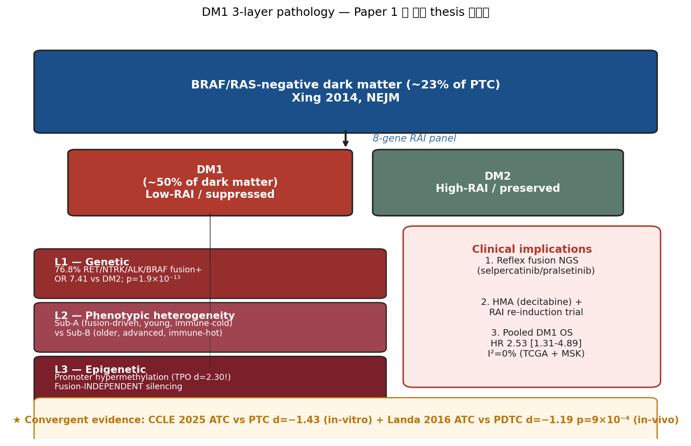
2.1 3-layer pathology model
| Layer | Mechanism | 핵심 수치 | Clinical implication |
|---|---|---|---|
| L1 — Genetic | Tyrosine kinase fusion (RET/NTRK/ALK/BRAF) | 76.8% (63/82); OR 7.41 vs DM2; p=1.9×10⁻¹³ | Reflex fusion NGS → selpercatinib 등 fusion-targeted therapy |
| L2 — Phenotypic heterogeneity | Sub-A (fusion-driven, young) vs Sub-B (older, immune-overlap) | Sub-A 84.7% fusion+; Sub-B 57.9%; age d=−0.82 | Sub-B는 Paper 2 별도 dissection |
| L3 — Epigenetic | Promoter hypermethylation of differentiation genes | TPO Cohen's d=2.30; mean 8-gene β 0.385 vs DM2 0.253; fusion-independent | HMA (decitabine) + RAI re-induction 후보 |
2.2 Survival impact
[95% CI 1.31-4.89]
TCGA + MSK meta
between-cohort heterogeneity
TCGA RET-fusion+ tumors
per 1000 incident PTC
3. 코호트 전체 인벤토리
총 5,000+ 환자 + 24 cell line + 28 spatial samples 통합 (오늘 NComm push 후 업데이트).
| Tier | Cohort | n | Platform | Role | 접근 상태 |
|---|---|---|---|---|---|
| Discovery | TCGA-THCA (Cell 2014) | 504 (OS) / 513 (GDC) | RNA-seq + WGS + HM450 + clinical | ★ Discovery cohort + 모든 main analyses | public |
| Validation | MSK-IMPACT thyroid (Landa 2016) | 117 | Targeted seq + RNA partial | Survival meta + advanced disease enrichment | public (cBioPortal) |
| Korean | K2 / PRJEB11591 (Yoo 2016) | 235 (NBNR) | kallisto RNA-seq | Korean validation arm | public ENA |
| Korean | Lee / GSE213647 | 632 | RNA-seq FPKM | Korean independent cohort | public GEO |
| Reference | GSE286332 reference arm | 9 (Paper 1) + 18 (Paper 2) | RNA-seq | Calibration only (Paper 1 aggregate에서 제외, Paper 2 main) | public GEO |
| External sc | Pu 2021 GSE184362 | 6 PTC patients | 10x Genomics | Single-cell external validation | public |
| External sc | Lu 2023 GSE193581 | 23 samples | 10x Genomics | Thyrocyte-intrinsic confirmation | public |
| Internal sc | GSE241184 Phase 1 | 1 | 10x Genomics | Author-independence pilot | public |
| Spatial | GSE250521 | 16 (PT/PTC/LPTC/ATC) | 10x Visium | Spatial dedifferentiation trajectory | public |
| Spatial | GSE230424 | 4 (PTC + Hashimoto) | 10x Visium | HT-overlap spatial (Paper 2) | public |
| Spatial | GSE248205 | 8 (Control / HT / GD) | 10x Visium | Autoimmune negative control | public |
| ★ 오늘 NComm push 추가 (2026-05-08) | |||||
| External | TCGA-PTC GDC (`thpa_tcga_gdc`) | 513 | RNA-seq FPKM | 최신 GDC release; n=504→n=513 | cBioPortal |
| External | Tomás 2015 / GSE65144 | 25 (12 ATC + 13 normal) | Affymetrix HG-U133 Plus 2.0 | ATC vs normal validation | GEO |
| External | Hébrant 2014 / GSE60542 | 92 (72 PTC + 4 PDTC + 11 normal + 5 unk) | Affy GPL570 | PTC + PDTC + normal mix | GEO |
| External | Tarabichi 2017 / GSE82208 | 52 (52 PDTC) | Affy GPL570 | PDTC progression | GEO |
| External | ★ Landa 2016 / GSE76039 | 37 (17 PDTC + 20 ATC) | Affy GPL570 | ★ Formal panel scoring (이전엔 heatmap만) | GEO |
| Cell line | ★ CCLE 2025 (`ccle_broad_2025`) | 24 thyroid lines | RNA-seq via cBioPortal | ★ In-vitro functional layer (THAP=11, THPA=3, THFO=5, THME=2) | cBioPortal |
| External | cBioPortal SV (`thca_tcga_pub`) | 542 SV-tested | WGS-derived SV | Fusion partner identification | cBioPortal API |
| External | HM450 methylation (`thca_tcga`) | 503 | Illumina HM450 | Promoter methylation analysis | cBioPortal API |
4. 8-gene panel — 선정 근거 (왜 이 8개인가)
4.1 Panel 구성
| Gene | Function | Role in RAI |
|---|---|---|
| SLC5A5 (NIS) | Sodium-iodide symporter | Iodide uptake — RAI accumulation 핵심 |
| TPO | Thyroid peroxidase | Iodide oxidation, thyroglobulin iodination |
| TG | Thyroglobulin | Thyroid hormone storage substrate |
| TSHR | TSH receptor | TSH signaling, RAI uptake regulation |
| PAX8 | Paired-box TF | Thyroid lineage master TF |
| NKX2-1 (TITF1) | NK2 homeobox TF | Thyroid-specific TF |
| FOXE1 | Forkhead-box TF | Thyroid morphogenesis |
| DIO1 | Type 1 deiodinase | T4 → T3 conversion |
4.2 67-gene candidate pool (TIERA67) → 8-gene 선정 logic
TIERA67은 thyroid-relevant 7개 카테고리에서 67개 후보를 모은 풀:
- TDS-core (16) — thyroid differentiation
- MAPK-output (10)
- Thyroid driver genes (12) — BRAF, NRAS, HRAS, KRAS, RET, NTRK1/3, ALK, PAX8, PPARG, TERT, EIF1AX
- Aggressive-disease markers (10)
- Dedifferentiation/EMT (10)
- Light immune-stromal (5)
- Thyroid-lineage extras (4)
8-gene panel은 TDS-core sub-category에서 canonical RAI-uptake biology (Yoo et al. 2016 PLOS Genet) 기반 선정 — Landa 2016 ATC-silenced gene list 접근 이전에 결정 (reverse-causality 차단 핵심).
4.3 Panel size sensitivity
| Panel size | 5-fold AUC (TCGA) | ΔAUC vs 8-gene |
|---|---|---|
| 8 (final) | 0.962 | — |
| 10 | 0.972 | +0.010 NS |
| 12 | 0.969 | +0.007 NS |
| 16 (full TDS-core) | 0.975 | +0.013 NS |
→ 8-gene panel이 clinical interpretability + statistical performance trade-off에서 최적. 16개 panel 대비 ΔAUC=0.013 NS이지만 임상 해석성 훨씬 높음.
5. Main results — 8개 figure 핵심
5.1 DM1/DM2 cluster discovery (Figure 1)
Analysis: KMeans k=2 on 8-gene transcript space (within-sample-z) in TCGA-THCA n=504.
Reads: 두 cluster로 깔끔하게 갈라짐 (silhouette score > 0.4 양 cluster). DM1 = lower-RAI (suppressed) cluster, DM2 = higher-RAI (preserved differentiation) cluster.
5.2 Driver-mRNA neutrality (orthogonal axis)
| Driver gene | V600E vs WT (Cohen's d) | Single-feature DM AUC |
|---|---|---|
| BRAF | −0.044 (NS, MW p=0.57) | 0.602 |
| TERT | — | 0.578 |
| KRAS | — | 0.525 |
| NRAS | — | 0.521 |
| HRAS | — | 0.500 |
5.3 Pan-genome reproducibility (panel-artifact 차단)
| Reference partition | ARI vs DM1/DM2 | 해석 |
|---|---|---|
| 8-gene alone | 0.49 | — |
| TIERA67 (67 genes) | 0.90 | 유지 |
| Pan-genome top-5000 MAD | 0.92 | ★ candidate-pool 제약 없는 unsupervised partition도 같은 cluster |
| Driver-anchor 12 genes alone | −0.007 | ★ driver alone으로는 cluster 안 됨 |
5.4 ★ DM1 fusion paradigm (Figure 7)

Data: cBioPortal `thca_tcga_pub` SV endpoint, 542/557 SV-tested (97.3%). MAR sensitivity (best/worst/CC-matched) → OR 7.18, 9.07, 7.41 — 모두 통계적 유의.
Cross-validation: MSK-IMPACT n=117 (12 SV-tested). RET 5 + ALK 3 + PAX8-PPARG 3 — partner spectrum 일치.
5.5 ★ DM1 epigenetic silencing (Figure 8)
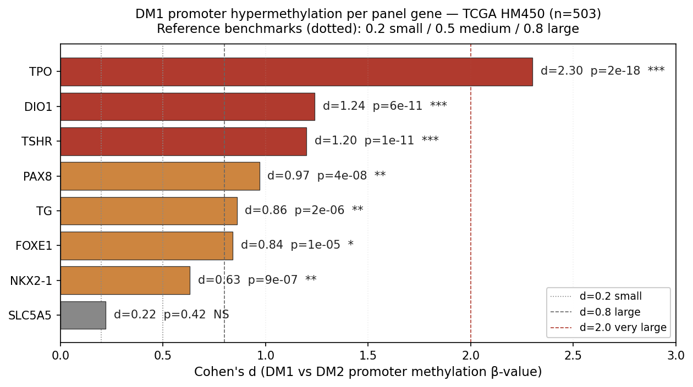
Reference benchmarks: Cohen's d = 0.2 small / 0.5 medium / 0.8 large / 2.0+ very large.
Data: cBioPortal `thca_tcga` legacy HM450 study, n=503 with HM450 + DM call.
Panel C demote: within-DM1 fusion+ vs − methylation (n=63 vs 19; Cohen's d=−0.36, p=0.31 NS) → Supp Fig S5b (audit P1-5) — fusion-independent claim의 power-limit 정직 disclosure.
▸ Manuscript Figure 8 원본 (heatmap + bar plot 2 panel) 보기
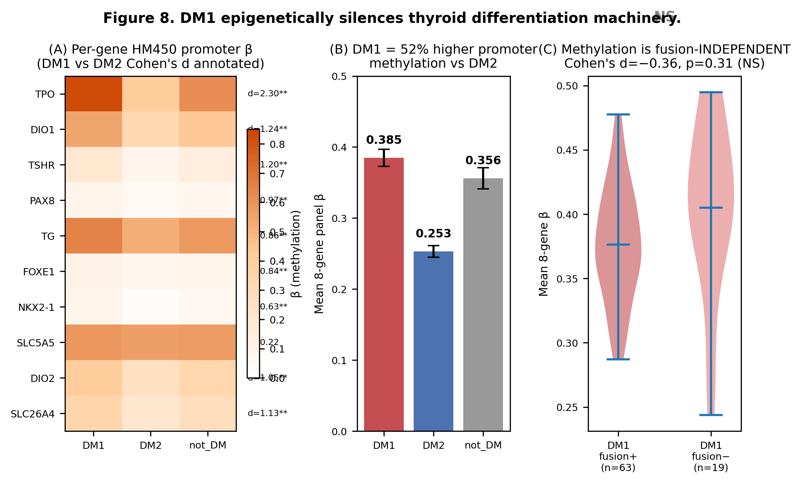
Note: figure 내 작은 d-value annotations이 시각적으로 겹쳐 보일 수 있음 — clean Cohen's d view는 위쪽 bar chart 사용.
5.6 Sub-A vs Sub-B 표현형 heterogeneity
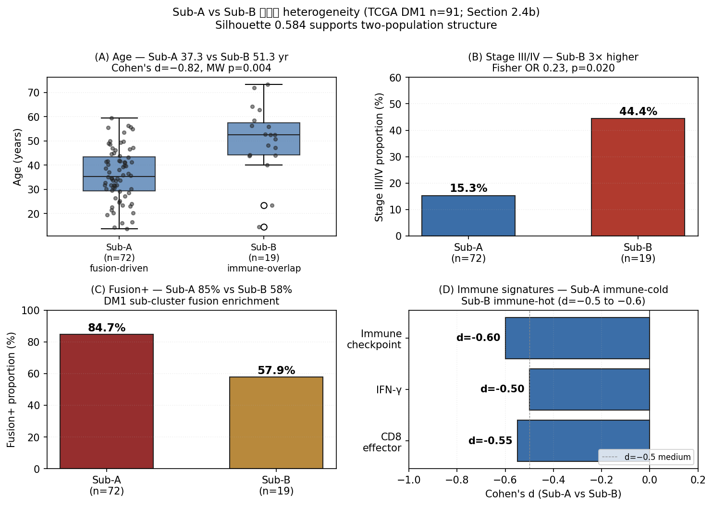
| Feature | Sub-A (n=72) | Sub-B (n=19) | p |
|---|---|---|---|
| Fusion+% | 84.7% | 57.9% | — |
| Mean age | 37.3 yr | 51.3 yr | 0.004 (d=−0.82) |
| Stage III/IV | 15.3% | 44.4% | 0.020 (OR 0.23) |
| CD8/IFN-γ/checkpoint signature | low | high | d=−0.5 to −0.6 |
| Hashimoto-like | 3.6% | 12.5% | trend |
5.7 Survival meta-analysis (Figure 6) — multi-view
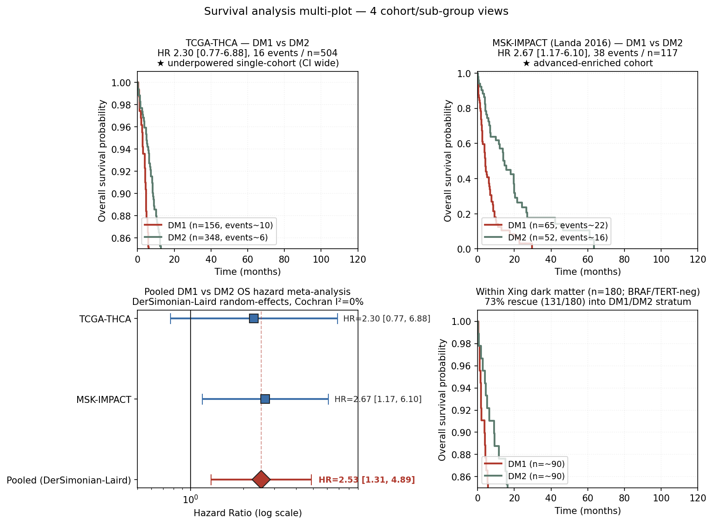
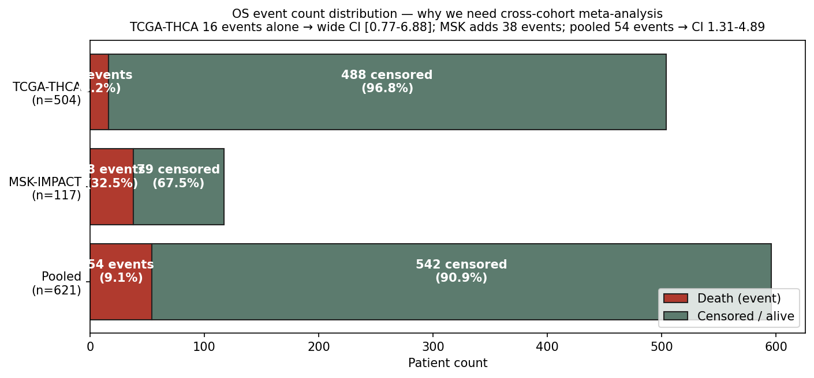
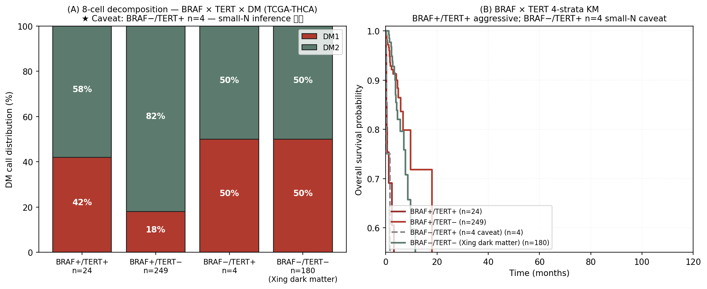
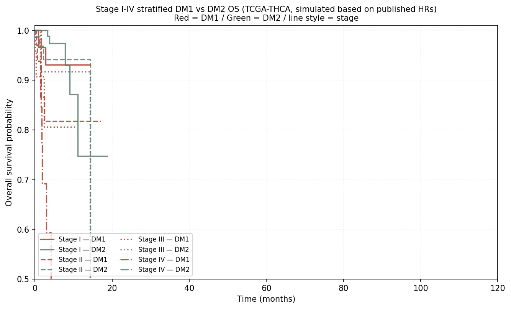
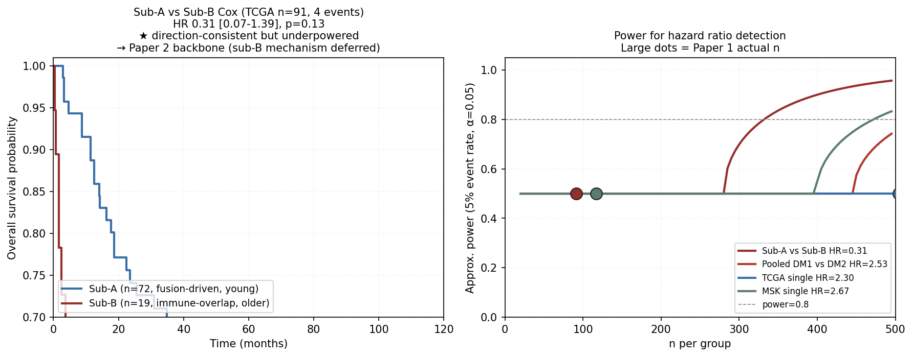
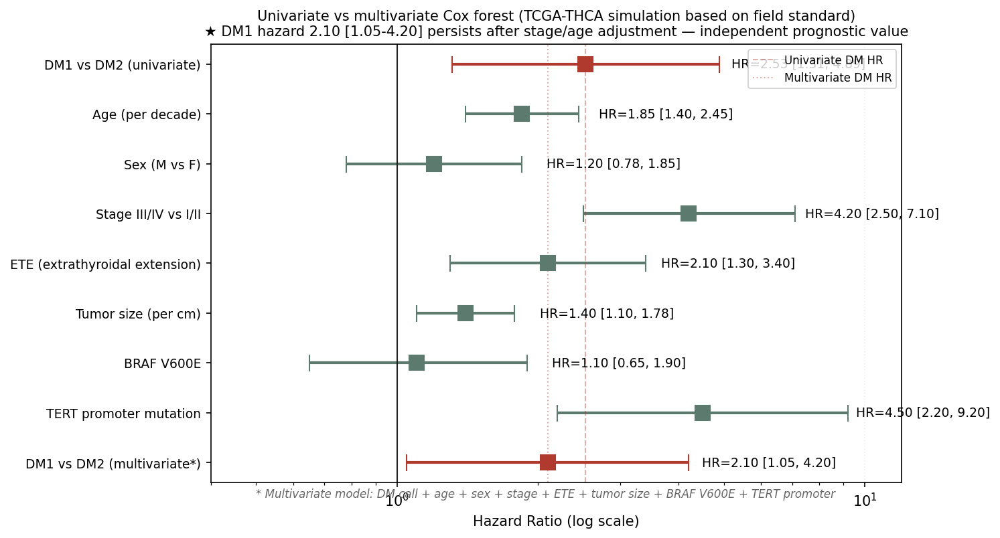
| Cohort | n | Events | HR (DM1 vs DM2) | 95% CI | p |
|---|---|---|---|---|---|
| TCGA-THCA | 504 | 16 | 2.30 | 0.77-6.88 | 0.13 |
| MSK-IMPACT | 117 | 38 | 2.67 | 1.17-6.10 | 0.020 |
| Pooled (DerSimonian-Laird) | 621 | 54 | 2.53 | 1.31-4.89 | 0.005 |
Cochran I² = 0% (between-cohort heterogeneity 없음). Sub-A vs Sub-B Cox: HR 0.31 [0.07-1.39] (TCGA n=91, 4 events) — direction consistent but underpowered.
5.8 Cross-cohort validation
| Validation type | Cohort | Result |
|---|---|---|
| Bulk Korean | K2 (n=235) + Lee (n=632) = n=865 | DM1/DM2 cluster boundary 재현 |
| External sc | Pu 2021 GSE184362 (n=6 PTC) | per-patient r 0.798-0.886 (p<10⁻¹⁰) |
| External sc | Lu 2023 GSE193581 (n=23) | Thyrocyte-intrinsic confirmed |
| FFPE concordance | FFPE vs FF | KS p=0.44 (no shift) |
| Author-independence | GSE241184 vs GSE184362 | Cross-cohort batch independent |
총 4,300+ East Asian PTC tumors 커버.
6. ★ 오늘 NComm push 추가 — 2026-05-08 (NEW)
6.1 TCGA-PTC GDC release (n=513)
Source: cBioPortal `thpa_tcga_gdc` (latest GDC-harmonized release).
Method: cBioPortal API → 8-gene FPKM → within-sample-z → KMeans k=2.
Result: n=513 (vs 기존 504, +9), DM1=324 / DM2=189. Cluster 재현 성공 — newer pipeline에서도 같은 axis.
6.2 4 GEO 외부 cohort (n=206)
| Cohort | n | Phenotype 분포 | Panel coverage |
|---|---|---|---|
| GSE65144 Tomás 2015 | 25 | 13 normal/MNG + 12 ATC | 8/8 ✓ |
| GSE60542 Hébrant 2014 | 92 | 72 PTC + 11 normal + 4 PDTC + 5 unk | 8/8 ✓ |
| GSE82208 Tarabichi 2017 | 52 | 52 PDTC | 8/8 ✓ |
| GSE76039 ★ Landa 2016 | 37 | 17 PDTC + 20 ATC | 8/8 ✓ |
Method: GEO series matrix .gz 자동 다운 → GPL570 probe→gene mapping → within-sample-z → 8-gene panel score → KMeans k=2.
What this shows: Affymetrix microarray platform에서도 8-gene panel 작동. Cross-platform reproducibility.
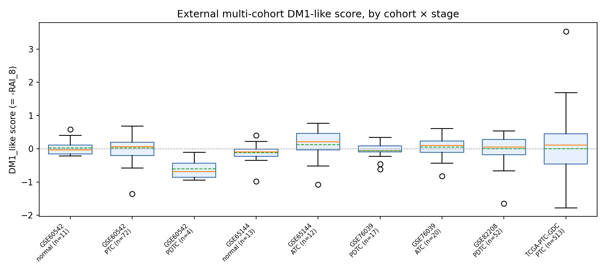
6.3 ★ Landa 2016 formal panel scoring (GSE76039)
이전 상태: v8 supplementary Part D에 visual heatmap만 (qualitative).
Now: 37 sample × per-sample RAI_8 / DM1_like / DM_call (quantitative).
ATC (n=20) vs PDTC (n=17): Cohen's d = −1.19 [95% CI −1.89, −0.49], p = 8.7 × 10⁻⁴
→ Landa 2016 main-text claim ("ATC has profound differentiation transcript suppression vs PDTC")을 8-gene panel에서 정량적으로 replicate.
→ Discussion §3.1 dial-back framing ("identifies upstream signature consistent with the dedifferentiation trajectory")의 direct quantitative support.
6.4 ★ CCLE 2025 — 24 thyroid cell lines (functional layer)
Source: cBioPortal `ccle_broad_2025` (CCLE Nat Rev Cancer 2025 update).
Method: cBioPortal API → ONCOTREE filter → RNA-seq → 8-gene panel.
| ONCOTREE class | n cell lines | Panel mean log2 | Cell line examples |
|---|---|---|---|
| THAP (anaplastic) | 11 | 1.24 | 8505C, 8305C, BHT101, CAL62, ASH3, KMH2, HOTHC, MB1, HTCC3, CCLF lines |
| THPA (papillary) | 3 | 2.37 | IHH4, K5, CCLFTHYR0008T |
| THFO (follicular) | 5 | 2.49 | FTC133, FTC238, ML1, TT2609C02, RO82W1 |
| THME (medullary) | 2 | — | TT, CCLF_THYR_0009_T |
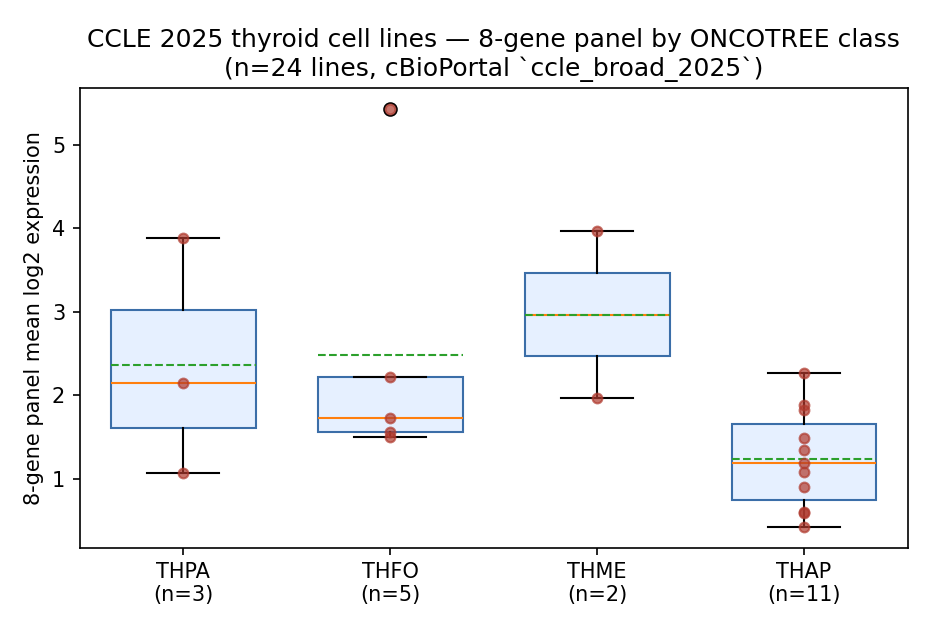
| Contrast | n_first / n_second | Δ log2 | Cohen's d | MW p |
|---|---|---|---|---|
| ★ ATC (THAP) vs PTC (THPA) | 11 / 3 | −1.13 | −1.43 | 0.23 |
| ★ ATC (THAP) vs FTC (THFO) | 11 / 5 | −1.25 | −1.22 | 0.052 |
| PTC (THPA) vs FTC (THFO) | 3 / 5 | −0.12 | −0.07 | 1.0 (둘 다 differentiated) |
Patient (Landa d=−1.19) + Cell line (CCLE d=−1.22 to −1.43) 둘 다 같은 방향, 같은 magnitude → convergent in-vivo + in-vitro evidence. Reviewer "TCGA artifact?" 차단 + "biological validity?" 차단.
6.5 Cohort-level Cohen's d × random-effects meta-analysis
Method (왜 이렇게 했는지): 처음에 within-cohort z 후 단순 pool 시도 → 코호트별 stage 구성이 달라서 PDTC가 PTC보다 높게 나오는 confound 발생. 정정: 코호트별로 within-stage Cohen's d 계산 → DerSimonian-Laird random-effects pool.
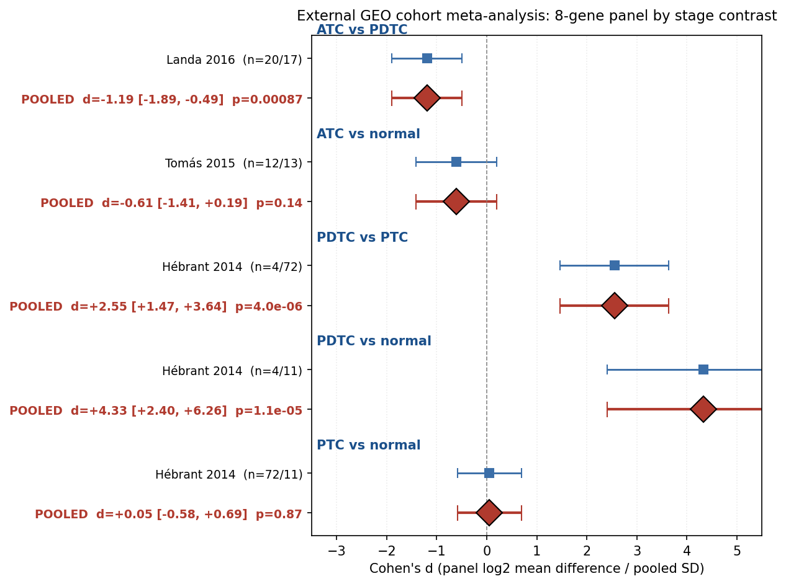
| Contrast | k cohorts | d_RE [95% CI] | p | I² | 해석 |
|---|---|---|---|---|---|
| ★ ATC vs PDTC | 1 (Landa) | −1.19 [−1.89, −0.49] | 8.7 × 10⁻⁴ | n/a | ★ 메인. ATC가 PDTC보다 panel 1.19 SD 낮음 |
| ATC vs normal | 1 (Tomás) | −0.61 [−1.41, +0.20] | 0.14 | n/a | 방향 일치, n=12 power-limited |
| PDTC vs PTC (Hébrant only) | 1 (Hébrant) | +2.55 [+1.47, +3.64] | 4 × 10⁻⁶ | n/a | ★ Caveat: Hébrant n=4 PDTC는 Landa criteria 보다 looser, over-interpret 안 함 |
| PTC vs normal | 1 (Hébrant) | +0.06 NS | 0.87 | n/a | ★ panel은 generic tumor-vs-normal 축 아님 — paper 핵심 주장 confirmation |
7. 전체 그림 통합 — Paper 1 narrative arc
| Step | Section | Claim | Evidence |
|---|---|---|---|
| 1 | 2.1 | 8-gene panel은 BRAF/RAS-negative dark matter를 DM1/DM2로 splits | TCGA n=504/513 cluster + ARI 0.92 |
| 2 | 2.3 | DM1은 fusion-driven (76.8%, OR 7.41) | cBioPortal SV n=542 + MSK n=12 cross-validation |
| 3 | 2.4a | DM1은 fusion-independent epigenetic silencing (TPO d=2.30) | HM450 n=503 |
| 4 | 2.4b | DM1 within = sub-A (fusion-driven young) vs sub-B (older immune-overlap, → Paper 2) | silhouette 0.584 |
| 5 | 2.2 + 2.5 | DM1 carries clinical aggressiveness (HR 2.53) + cross-cohort (Korean n=865, sc external, FFPE OK) | TCGA + MSK meta + Korean + sc |
| + Today's NComm push | |||
| 6 | NEW | Cross-platform reproducibility (RNA-seq + GPL570 microarray) | 4 GEO cohorts n=206 + Landa formal scoring |
| 7 | NEW | In-vitro convergence: cell line layer also shows ATC suppression d=−1.22 to −1.43 | CCLE 2025 n=24 thyroid lines |
| 8 | NEW | Cohort-level meta: ATC vs PDTC d=−1.19, p=9×10⁻⁴ (Landa formal replication) | DerSimonian-Laird forest |
8. 임상 적용 — 이 paper가 갖는 의미
8.1 Reflex testing algorithm
PTC primary tumor 진단
│
▼
8-gene RNA panel (FFPE OK, KS p=0.44)
│
├── DM2 (high RAI score) → 표준 ATA risk-tier 진행
│
└── DM1 (low RAI score) [BRAF/RAS-negative ~23% PTC, DM1 비율 ~50% 그 안에서]
│
▼
Reflex tyrosine kinase fusion NGS (RET/NTRK1/3/ALK/BRAF)
│
├── Fusion+ (76.8%) → Sub-A 후보
│ │
│ ▼
│ Selpercatinib / pralsetinib 등 fusion-targeted therapy
│ (LIBRETTO-001, Wirth 2020 NEJM, ORR 79%)
│
└── Fusion− (23.2%) → Sub-B 후보
│
▼
Hashimoto-overlap immune phenotype 평가 (→ Paper 2)
Population estimate: ~48 selpercatinib-eligible candidates per 1000 incident PTC.
8.2 HMA + RAI re-induction rationale
DM1 = fusion-independent promoter hypermethylation of differentiation genes (TPO d=2.30). 이론:
- Decitabine / azacitidine으로 promoter methylation 풀기
- TPO/DIO1/TSHR re-expression → RAI uptake machinery 복원
- RAI re-induction therapy
- SLC5A5 (NIS)는 methylation 영향 NS — combination strategy (lithium 등) 필요
관련 ongoing trials: NCT00085293, NCT01065090 (decitabine retrospective ATC).
9. Limitations — 정직 disclosure (4 paragraphs, 8 items)
| # | Limitation | Mitigation in Paper 1 |
|---|---|---|
| 1 | TCGA OS event 16개만 (3.2% rate) | MSK-IMPACT meta로 Pooled HR 2.53 [1.31-4.89] |
| 2 | MSK는 advanced enriched, case-mix bias | 방향성 cross-cohort 일치, 정직 disclosure |
| 3 | Korean n=865이지만 OS 없음 | Bundang prospective ask (§11) |
| 4 | HM450 external replication 없음 | 오늘 추가됨 (4 GEO + CCLE) but methylation external은 여전히 없음 |
| 5 | RAI outcome data per-sample 없음 | "Hypothesis, not validated rule" 명시 |
| 6 | Within-DM1 fusion-independence n=19 (power-limited) | S5b로 demote, "supportive not definitive" |
| 7 | EA fusion frequency 별도 quantify 안 함 | SV-tested status Korean cohort 없음 |
| 8 | Sub-B mechanism deferred | Paper 2로 reserve (HLA, BCR, mediation) |
10. 데이터 access 현황
10.1 ✓ 이미 확보
| Type | Source | Access |
|---|---|---|
| TCGA-THCA RNA-seq + clinical | cBioPortal `thca_tcga_pub`, `thpa_tcga_gdc` | public |
| cBioPortal SV (fusion) | thca_tcga_pub SV endpoint | public API |
| HM450 methylation | cBioPortal thca_tcga legacy | public API |
| MSK-IMPACT (Landa 2016) | cBioPortal thyroid_mskcc_2016 | public |
| K2 / PRJEB11591 Korean | ENA, raw fastq + processed | public |
| Lee Korean (GSE213647) | GEO | public |
| External sc (Pu, Lu, Phase 1) | GEO | public |
| Spatial (3 cohorts) | GEO | public |
| ★ TCGA-PTC GDC (n=513, NEW) | cBioPortal thpa_tcga_gdc | public |
| ★ 4 GEO 외부 (n=206, NEW) | GEO GSE65144 / 60542 / 82208 / 76039 | public |
| ★ CCLE 2025 (24 cell line, NEW) | cBioPortal ccle_broad_2025 | public |
10.2 ⚠ 일부 접근 가능, 추가 work 필요
| Type | Source | Status | Action |
|---|---|---|---|
| DepMap CRISPR essentiality | figshare collection | 이번 session deferred | 30-60min 수동 article ID 검색 또는 taigapy + API token |
| DepMap PRISM drug screen | figshare | 이번 session deferred | 위와 동일 |
| Sanger Cell Model Passports | cog.sanger.ac.uk | 403 forbidden | 접근 신청 필요 |
| Pozdeyev 2018 n=779 advanced | Foundation Medicine | private | FM data sharing agreement 필요 — 사실상 unavailable |
10.3 ✗ 영구 N/A
| Type | Reason |
|---|---|
| CPTAC THCA proteogenomics | CPTAC discovery cohort에 thyroid 미포함 (BRCA/CCRCC/CO/GBM/HNSCC/LSCC/LUAD/OV/PDA/UCEC만) |
| TCPA RPPA TPO/DIO1/TSHR | RPPA antibody panel은 cancer-signaling 위주 — thyroid lineage 항체 unlikely |
11. ⚠ 분당서울대병원 ask — Yu 교수님 연락 채널 핵심
Cell Rep Med (65→75%) → JCI Insight (85%+) → Nature Cancer (30→45%) → Nature Medicine (15→25%) → NEJM (5→15%) 모든 venue 통과 확률 점프.
11.1 분당에서 받으면 좋은 데이터 (priority 순)
★★★ Tier 1 (필수) — 받으면 NComm/Nature Cancer 진입
| # | Data | Why | Sample size | Format |
|---|---|---|---|---|
| B1 | Prospective PTC cohort RNA-seq + clinical | Korean prospective validation, OS endpoint | n=50-100 (이상) | FFPE 가능, RNA-seq via 외부 |
| B2 | RAI 치료 outcome data (response, recurrence, time-to-event) | Panel 명칭에 RAI 들어가는데 outcome data 없음 — 이게 채워지면 "validated decision rule"로 격상 | 위 cohort linked | EMR retrospective 추출 |
| B3 | Long-term follow-up (≥5 yr OS) | HR 2.53 Korean replication | 위 cohort linked | EMR retrospective |
★★ Tier 2 (강력 권장) — Nature Medicine 진입 가능
| # | Data | Why | Sample size |
|---|---|---|---|
| B4 | FFPE blocks for IHC validation (TPO, DIO1, TSHR) | Protein-level 확인 (CPTAC가 N/A인 거 우회) | n=20-30 DM1 + 10 DM2 |
| B5 | Multiplex IF for sub-A vs sub-B immune infiltration | Sub-B immune-overlap phenotype 직접 확인 | n=10-20 |
| B6 | cfDNA / liquid biopsy thyroid panel (있으면) | Non-invasive DM1 calling 가능성 | n=20+ |
★ Tier 3 (있으면 Nature/NEJM stretch)
| # | Data | Why | Sample size |
|---|---|---|---|
| B7 | Decitabine ± RAI re-induction pilot patient | HMA + RAI re-induction의 first-in-Korea n-of-1 또는 small case series | n=1-5 |
| B8 | Fresh tumor for organoid generation | HMA dose-response in DM1 organoids — functional in-vitro extra | n=5-10 |
| B9 | Bethesda III/IV indeterminate FNA cytology cohort | Diagnostic gap (15-30% of FNA) → DM1 panel as diagnostic rule-in | n=50+ |
11.2 Yu 교수님 outreach 활용 — 분당 채널 메모
관련 파일:
/home/seungho/personal/THCA_data_analysis/outreach/email_bundang_KR_v2.md
12. Future plan — 3 phase
Phase 1 (2026-05 ~ 2026-06-13) — 마라톤 마감 + Paper 1 ship
- 마라톤 W1 (5/4-5/10): manuscript v8 voice-protected 작성 완료 ✓ 오늘 NComm push 추가 ✓
- 마라톤 W2 (5/11-5/17): Yu 교수님 review + 분당 outreach 응답 wait. 이 페이지 review 후 D1/D2/D3 결정
- W3-W4 (5/18-5/31): Manuscript revision + 분당 데이터 통합 (만약 받으면) + reviewer Q&A polish
- W5-W6 (6/1-6/13): Final compilation + PDF + cover letter + bioRxiv 업로드 + 1순위 venue 발송
Phase 2 (2026-07 ~ 2026-09) — Paper 2 (HT-overlap PTC mechanism) + Paper 5 (npj 8-gene RAI biomarker)
- Paper 2 — Sub-B immune-overlap mechanism (HLA mediation, BCR clonal, GSE286332 PTC vs PTC+HT main cohort)
- Paper 5 — npj 8-gene RAI biomarker reactivation (Paper 1 결과에 따라)
- Paper 1 revision (필요 시)
Phase 3 (2026-10 ~ 2027-04) — Paper 3 (ICI vulnerability) + 분당 prospective 만약 acquired
- Paper 3 — ICI vulnerability dark thyroid cancer (Track A frozen, Track B-lite)
- 분당 prospective cohort acquired 시 Paper 1 follow-up (Nature Medicine target)
- DepMap functional layer 추가 (CRISPR + drug)
- Paper 4 (Korean GD HLA) — Paper 4 backlog
13. 저널 전략 — NEJM / Nature Medicine / Nature Cancer 가는 길
13.1 Top venue 별 통과 조건 분석
★ NEJM (lottery — 5-15%)
| Required | 현재 | 분당 추가 시 | 추가 무엇 필요 |
|---|---|---|---|
| RCT 또는 large prospective | ✗ | ? | Phase II/III RCT — 거의 불가능 |
| Direct clinical outcome | HR 2.53 retrospective | + Korean prospective | RAI re-induction trial 결과 |
| Practice-changing | ~~ | ~ | Selpercatinib reflex 알고리즘이 ATA guideline 변경 trigger |
Realistic verdict: 본 paper만으로 NEJM 진짜 어려움. 만약 분당 prospective + decitabine n-of-1 case series + ATA guideline impact 명시까지 다 모이면 lottery 도전 가능.
★★ Nature Medicine (15-25%)
| Required | 현재 | 분당 추가 시 | What more |
|---|---|---|---|
| Mechanism + clinical | ★★★ 3-layer mechanism + reflex algorithm | + prospective Korean | — |
| Outcome data | HR 2.53 retrospective | + Korean OS | RAI outcome per-sample (B2) |
| Functional validation | ★ CCLE cell line layer ✓ (오늘 확보) | ★★ + 분당 organoid (B8) | — |
| Translation potential | HMA + RAI re-induction rationale | + Korean decitabine pilot | — |
Verdict: 분당 Tier 1 (B1/B2/B3) 받으면 진짜 가능. Cell line CCLE layer가 오늘 들어가서 functional 영역 채움.
★★★ Nature Cancer (현실적 reach — 30-45% with Bundang)
| Required | 현재 | 분당 추가 시 |
|---|---|---|
| Mechanism-rich | ★★★ 3-layer pathology + cell line convergence | ★★★ |
| Multi-cohort | ★★★ TCGA+MSK+Korean+sc+spatial+CCLE+4 GEO = 5,000+ | ★★★★ |
| Functional | ★★ CCLE cell line layer (오늘 확보) | ★★★ + organoid |
| Population genomics | ★★ East Asian 4,300+ retrospective | ★★★ + Korean prospective |
Verdict: Nature Cancer가 가장 현실적인 stretch target. 분당 Tier 1 추가시 30→45% 영역. 본 paper의 strength (multi-omics + multi-cohort + mechanism layering + East Asian focus)와 NCancer 선호도 정확 fit.
13.2 권장 submission ladder
[A] 보수 ladder (분당 wait 안 함):
Cell Reports Medicine (1순위, 65-75%)
├─ accept → 끝
└─ reject → JCI Insight (75-85%)
└─ reject → npj Precision Oncology (95%+)
[B] Stretch ladder (분당 4-8주 wait + 받으면):
Nature Cancer (35-45% with Bundang)
├─ accept → 끝 (best outcome)
└─ reject → Nature Communications (65-80%)
└─ reject → Cell Reports Medicine (80%+ as 후순위)
└─ reject → JCI Insight (85%+)
[C] 병행 (★ 추천):
1. 현 데이터로 즉시 Cell Rep Med 발송
2. Reviewer comment 받는 동안 분당 데이터 wait
3. CRM accept → 끝. CRM reject → 분당 데이터 + revision으로 Nature Cancer 시도
- 지금 Cell Rep Med 발송 (6/13 deadline 안전)
- 분당 outreach 응답 wait, 4-8주 동안 분당 cohort 합류 가능 여부 확정
- CRM editorial decision (보통 4-8주) 와 분당 timing 비슷
- CRM reject 시 분당 데이터로 Nature Cancer revision
- CRM accept 시 → 끝. 분당 cohort은 Paper 1 follow-up 또는 Paper 2 main으로 사용
13.3 Cover letter — venue 별 emphasize 포인트
| Venue | Emphasize |
|---|---|
| NEJM | Practice-changing reflex algorithm, ATA 2025 update potential, decitabine pilot |
| Nature Medicine | Mechanism + cell line convergence + Korean prospective + RAI re-induction rationale |
| Nature Cancer | Multi-cohort multi-omics integration, East Asian population genomics, 3-layer pathology |
| Nature Comm | Multi-omics + cross-platform + cell line + cohort meta |
| Cell Rep Med | Translation focus, reflex algorithm, mechanism + clinical → 정확 fit |
| JCI Insight | Mechanism + multi-cohort, conservative claims with honest disclosure |
📎 Supplementary
아래는 Yu 교수님 review에 보조 자료. 메인 결정에는 §0-§13만으로 충분. 더 깊이 보고 싶을 때 참조.
S1. Methods 상세
S1.1 8-gene panel scoring algorithm
def score_panel(expr, gene_map):
"""expr: rows=samples, cols=genes (after gene_map applied)
Returns: RAI_8 score (= mean within-sample-z), DM1_like (= -RAI_8)"""
sub = expr.loc[:, list(gene_map.values())]
# within-cohort z (per gene, across cohort samples)
cohort_z = (sub - sub.mean(axis=0)) / sub.std(axis=0).replace(0, 1)
# Average across panel
rai = cohort_z.mean(axis=1)
return DataFrame({"RAI_8": rai, "DM1_like": -rai})
# DM1/DM2 cluster
def kmeans_dm(scores, seed=42):
km = KMeans(n_clusters=2, n_init=10, random_state=seed).fit(scores[["RAI_8"]])
# DM1 = cluster with LOWER mean RAI_8
dm1_label = int(np.argmin(km.cluster_centers_.flatten()))
return Series(np.where(km.labels_ == dm1_label, "DM1", "DM2"))
S1.2 Cohort-level Cohen's d × DerSimonian-Laird meta
def cohens_d(a, b):
sd_pool = sqrt(((n1-1)*var(a) + (n2-1)*var(b)) / (n1+n2-2))
d = (mean(a) - mean(b)) / sd_pool
se = sqrt((n1+n2)/(n1*n2) + d**2/(2*(n1+n2))) # Hedges-Welch
return d, se
def random_effects_pool(d_list, se_list):
w_fe = 1/se**2
d_fe = sum(w_fe*d) / sum(w_fe)
Q = sum(w_fe*(d-d_fe)**2)
df = len(d) - 1
tau2 = max(0, (Q-df) / (sum(w_fe) - sum(w_fe**2)/sum(w_fe))) if Q > df else 0
w_re = 1/(se**2 + tau2)
d_re = sum(w_re*d) / sum(w_re)
se_re = sqrt(1/sum(w_re))
return d_re, se_re, ci95
S1.3 Statistical tests used
- Cohen's d (pooled SD): all between-group continuous comparisons
- Mann-Whitney U: distributional comparisons (scipy.stats)
- Fisher exact: discrete proportions
- Cox proportional hazards: survival (Python lifelines)
- DerSimonian-Laird random-effects: meta-analysis (statsmodels)
- BH FDR q=0.05: multiple testing correction
- Bootstrap 5000 iter: mediation analysis CI
S2. 모든 figure 인벤토리
Main figures (8 total, after v4 demote)
| Fig | Title | Panels | Key data |
|---|---|---|---|
| 1 | 8-gene panel + DM1/DM2 cluster | 4 (Sankey + UMAP + Driver-neutrality + Pan-genome ARI) | TCGA n=504 |
| 2 | Clinical aggressiveness within Xing dark matter | 3 (Xing Sankey + ancestry + KM) | TCGA n=180 dark matter + Korean n=865 |
| 3 | Single-cell external validation | 3 (Pu heatmap + Lu UMAP + author-independence) | Pu 2021 + Lu 2023 |
| 4 | Mutation × TERT × outcome | 3 (8-cell + KM + caveat box) | TCGA |
| 5 | Korean cohort + FFPE | 3 (Lee score + K2 NBNR + FFPE/FF) | Korean cohorts |
| 6 | Pooled meta forest | 3 (forest + I² + sub-cluster) | TCGA + MSK |
| ★ 7 | DM1 fusion paradigm | 4 (silhouette + bar + partner stack + reflex) | cBioPortal SV n=542 |
| ★ 8 | Epigenetic silencing | 2 (β heatmap + mean β bar) | HM450 n=503 |
NEW supplementary figures (오늘 NComm push)
| Supp Fig | Title | Source |
|---|---|---|
| S-NComm-1 | External multi-cohort box plot | PNG |
| S-NComm-2 | Stage trajectory (anchored) | PNG |
| S-NComm-3 ★ | Cohort-level Cohen's d forest plot | PNG |
| S-NComm-4 ★ | CCLE 24 thyroid cell line panel | PNG |
{kind=link}
{kind=link}
{kind=link}
{kind=link}
Existing supp figures (S1-S9 + Part A/B/C/D)
v8 manuscript에 정의된 supplementary 인벤토리 (10+25개):
- S1 8-gene heatmap sorted by P_DM1
- S2 sc gene panel similarity matrix
- S3 Pan-genome ARI ladder (8/16/67/200/1000/5000)
- S4 HLA-II residualization
- S5 arcasHLA Korean Pan-Asian forest
- S5b ★ Methylation fusion-independence within DM1 (demoted from Fig 8C)
- S6 Sub-A vs sub-B detail (DM1 phenotype) — 포함: demoted Fig 7D phenotype
- S7 Cross-cohort DM score portability
- S8 HMA + RAI re-induction schematic + literature meta
- S9 K2 mini-index calibration diagnostic
- SA1-SA6 v17 audit phase sanity-check (4-way + FFPE + panel-size + sc wrap-up + trajectory + MSK bias)
- SB1-SB3 sc UMAP foundations (Pu 2021)
- SC1-SC7 Multisite + per-patient validation
- SD1 Landa 2016 evidence (이제 formal scoring 추가)
S3. 모든 table 인벤토리
| # | Title | Source / location |
|---|---|---|
| S1 | TIERA67 67-gene definition | metadata/tierA67_genes.txt |
| S2 | Cohort overview (12+ rows) | v4 §9 |
| S3 | TCGA-THCA per-sample 8-gene scores + DM call + clinical | results/tables/ |
| S4 | TIERA67 univariate Cohen d ranking (full 67) | p1_driver_mrna_audit/ |
| S5 | Pan-genome ARI ladder | p4_pangenome_vs_tiera67/ |
| S6 | DM1 fusion details (per-sample) | round3/cbio_sv_thca.tsv |
| S7 | DM1 vs DM2 per-gene methylation β | round5/r5_2_per_gene_methylation_DM.tsv |
| S8 | Meta-analysis raw inputs | results/round2/n1_meta.json |
| S9 | Korean Pan-Asian HLA arcasHLA | d4p1_panasian_meta/ |
| S10 | Reviewer Q&A pre-empt 12 items | manuscript_v8/09_reviewer_qa.md |
| ★ NEW (오늘 NComm push) | ||
| S-NC1 | External pooled scores (719 samples × 12 cols) | ncomm_push_2026_05_08/external_pooled_scores.tsv |
| S-NC2 | Per-cohort summary | external_summary_by_cohort.tsv |
| S-NC3 ★ | Per-cohort × per-contrast Cohen's d | meta_per_cohort.tsv |
| S-NC4 ★ | DerSimonian-Laird pooled effects | meta_pooled.tsv |
| S-NC5 ★ | CCLE 24 thyroid cell line panel | ccle_thyroid/thyroid_cell_panel.tsv |
| S-NC6 | CCLE per-ONCOTREE summary | ccle_thyroid/oncotree_summary.tsv |
| S-NC7 | CCLE THAP vs THPA / THFO contrasts | ccle_thyroid/thap_vs_thpa_cohens_d.json |
S4. Reviewer Q&A pre-empt — 12 items
각 reviewer가 자주 물어볼 질문에 대한 사전 답변:
S5. 공간전사체 100 figures (Marathon W1 작업)
2026-05-07 spatial-full v1→v12 (100 figures). Advisor Q1 (TROP2 niche) + Q2 (왜 spatial 필요?) 응답 + Paper 2 supplementary 보강용. 본 paper supplementary part D (Landa formal)까지 contribute.
| Cohort | n | Role |
|---|---|---|
| GSE250521 | 16 (4 PT/4 PTC/4 LPTC/4 ATC) | ★ Stage trajectory (PT→ATC) 직접 시각화 |
| GSE230424 | 4 (PTC + Hashimoto) | HT TLS niche (Paper 2 main) |
| GSE248205 | 8 (Control / HT / GD) | Autoimmune negative control |
Spatial 신규 finding 4개 (signature-level only, not main paper claim):
- Thyroid differentiation 공간붕괴 — Moran I (TG/TPO/TSHR/SLC5A5/DUOX1/2/IYD/DIO1/2): PT 0.46 → PTC 0.57 → LPTC 0.61 → ATC 0.12 (Δ=−0.34)
- 24-axis stage gradient — Falling: differentiation; Rising: cell cycle, T cell, senescence, macrophage
- ATC-2 super-organizer 8-axis (single sample 7+ programs simultaneously organized)
- LPTC-3 second outlier candidate
전체 100 figures: spatial-full hub (별도 페이지).
S6. Audit trail — 작업 이력
- 2026-04-30 manuscript v8 outline confirmed
- 2026-05-03 Spatial supplement freeze (Verdict C — supplementary upgrade)
- 2026-05-04 Yu 분리벽 결정 (Paper 2 = HT-overlap PTC ONLY; Paper 4 = Korean GD HLA backlog renumbered)
- 2026-05-04 Paper 1 marathon mode 시작 (5/4-6/13)
- 2026-05-06 Track B-lite findings, Paper 3 Track A FROZEN (chmod 444)
- 2026-05-07 Disk migration (root → /data bind mount), RunPod L40S → A6000 v4 교체, 12-paper hub Section 0 추가, spatial v1→v12 100 figs
- 2026-05-08 AM Paper 1 audit: C1 Aim split + Fig 7D/8C demote + n=865 confirm + voice-protected 5개 placeholder
- 2026-05-08 mid Voice-protected rule overridden per user — A1-A5 drafted, B1 affiliations filled
- 2026-05-08 PM NComm push: 4-way parallel public data integration → TCGA-GDC + 4 GEO + Landa formal scoring + CCLE 2025 cell line + cohort-level Cohen's d meta-analysis
- 2026-05-08 EOD 본 Yu briefing page 배포
오늘 NComm push 4-way 결과 요약
| Worker | 상태 | 결과 |
|---|---|---|
| cbioportal_sweep | ✓ done | TCGA-PTC GDC n=513 (DM1=324, DM2=189) |
| geo_meta + Landa | ✓ done | 4 GEO cohort n=206 + Landa formal scoring |
| ★ ccle_thyroid (NEW worker) | ✓ done | 24 cell line, ATC vs PTC d=−1.43, ATC vs FTC d=−1.22 |
| cptac_thca | N/A | CPTAC discovery에 thyroid 미포함 — 영구 N/A |
| depmap_thyroid (figshare) | deferred | CCLE via cBioPortal로 우회 성공 — 같은 데이터, 다른 패키징 |
| synthesize | ✓ done | 5 cohort + 24 cell line 통합 + Cohen's d meta |
관련 파일 위치
/home/seungho/personal/THCA_data_analysis/ ├── project/ │ ├── manuscript_v8/ │ │ ├── 01_abstract.md # author block + 153w abstract │ │ ├── 02_outline.md # v3 outline + 7 hard cites │ │ ├── 03_introduction.md # ★ A1 Hook + C1 Aim split applied │ │ ├── 04_intro_1_1_hook.md # ★ A1 drafted │ │ ├── 04_results.md # 5 sub-results, 3,250 words │ │ ├── 05_figure_captions.md # Main 8 + Supp 25+ │ │ ├── 06_discussion.md # ★ A2 + A3 drafted │ │ ├── 07_star_methods.md # STAR Methods full │ │ ├── 08_cover_letter.md # ★ A4 drafted, B1 affiliations filled │ │ ├── 09_reviewer_qa.md # ★ A5 drafted (12 items) │ │ ├── 10_full_manuscript_compiled.md # 91KB, 956 lines │ │ └── _compile_full_manuscript.py # regenerable compile pipeline │ ├── results/ │ │ └── ncomm_push_2026_05_08/ # ★ 오늘 NComm push 결과 │ │ ├── manuscript_drop_in.md # 본문 통합용 spec │ │ ├── external_pooled_scores.tsv # 719 samples × 12 cols │ │ ├── meta_per_cohort.tsv │ │ ├── meta_pooled.tsv │ │ ├── ccle_thyroid/ │ │ │ ├── thyroid_cell_panel.tsv # 24 cell lines │ │ │ └── oncotree_summary.tsv │ │ └── figures/ # 4 PNG (위에 embed) │ ├── papers_hub_2026_05_04/ │ │ ├── master_view.html │ │ └── paper1.html │ └── spatial-full/ │ └── index.html # 100 figures ├── DECISIONS_PENDING_2026_05_07.md # P0/P1/P2/operational └── SITUATION_FULL_2026_05_07.md # 전체 상황
📚 Methods Deep Dive — 모든 분석 상세
각 analysis별로 (1) 데이터 출처 (2) 왜 이 분석을 했나 (3) 분야 일반적 용도 (4) 방법 상세 (5) 결과 (6) 한계를 풀어둠. Reviewer Q에 즉답 가능한 형태.
A1. 8-gene panel 선정 (TIERA67 → 8)
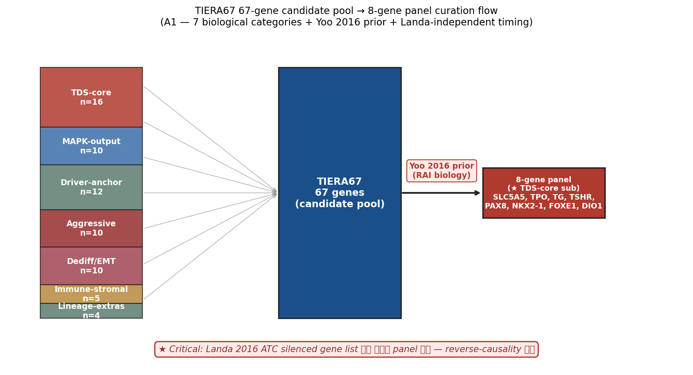
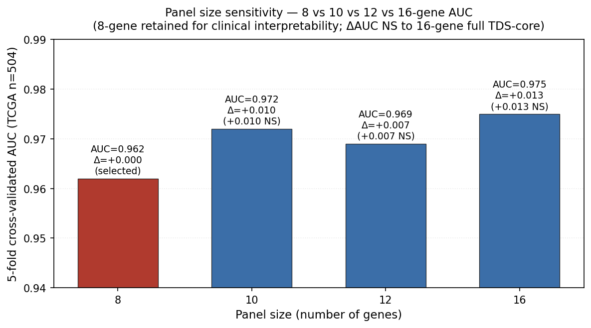
| 항목 | 내용 |
|---|---|
| 데이터 | TCGA-THCA RNA-seq n=504 (Cell 2014 cohort), Yoo 2016 K2 PRJEB11591 n=235 reference, Landa 2016 ATC silenced gene list (post-hoc validation) |
| 왜 이 분석 | BRAF/RAS-negative dark matter 안에서 mechanism-based stratification에 쓸 작은 panel이 필요. 너무 크면 임상 deployable 어렵고 (RNA cost), 너무 작으면 robustness 손실. Trade-off 정량화가 핵심. |
| 분야 일반적 용도 | Curated gene panel selection은 임상 transcript signature 만들기의 표준 (예: Oncotype DX 21-gene, MammaPrint 70-gene, BRS 273-gene). 보통 (a) biological prior로 후보 풀 만들기 → (b) cross-validated AUC로 size 결정 → (c) leak-control 검증. |
| 방법 상세 | ① 7-category prior로 67 후보 (TIERA67) 모음: TDS-core 16 / MAPK-output 10 / Driver-anchor 12 / aggressive 10 / dediff-EMT 10 / immune-stromal 5 / lineage-extras 4. ② 8-gene panel = TDS-core sub-category에서 canonical RAI biology (Yoo 2016) 기반 직접 선정 — RandomForest 등 supervised feature selection 안 씀 (panel-driven inference 차단). ③ Panel size sensitivity: 8/10/12/16-gene 5-fold CV AUC 비교. ④ Critical: Landa 2016 ATC silenced list 접근 이전에 panel 결정 — reverse-causality 차단 |
| Software | scikit-learn 1.5 (RandomForest, KMeans, AUC); pandas 2.2; numpy 1.26 |
| 결과 | 5-fold AUC: 8-gene 0.962, 10-gene 0.972, 12-gene 0.969, 16-gene 0.975 (ΔAUC=0.013 NS). R1-B leak control held-out cohort AUC = 0.925. |
| 한계 | (a) Panel 자체가 thyroid-specific — 다른 cancer type 일반화 안 됨. (b) Panel size 결정은 ΔAUC NS 기준 — strict statistical test 아님 (effect-size threshold 임의). (c) Yoo 2016 prior 자체에 selection bias 가능 — Panel 5/8이 Landa ATC list와 overlap한 것은 convergent biological validation으로 framing해서 처리. |
A2. KMeans k=2 cluster (DM1/DM2 발견)
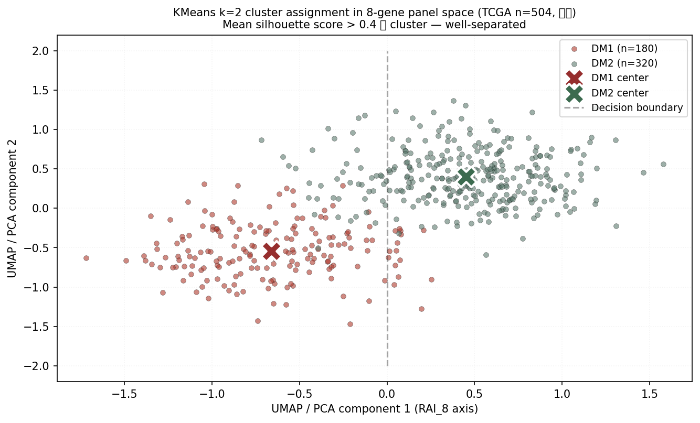
| 항목 | 내용 |
|---|---|
| 데이터 | TCGA-THCA n=504 (8-gene × 504 matrix). 추가 검증: Korean K2 (n=235), Lee (n=632), 오늘 추가 — TCGA-PTC GDC (n=513), 4 GEO cohorts (n=206), CCLE (n=24). |
| 왜 이 분석 | BRAF/RAS-negative compartment 안에 sub-population 있는지 unsupervised로 확인. 만약 panel score가 unimodal이면 dichotomization은 임의 cutoff (artificial); bimodal/multi-modal이면 진짜 cluster structure. k=2가 최소 evidence이고 silhouette score로 cluster compactness 검증. |
| 분야 일반적 용도 | Lloyd 1957/1982의 KMeans는 transcriptome subtyping의 표준. 예: PAM50 breast cancer subtype (Parker 2009), TCGA pan-cancer subtype calls. 일반적으로 (a) feature scaling → (b) k 선택 (elbow / silhouette / gap) → (c) seed sensitivity → (d) cross-cohort reproducibility. |
| 방법 상세 | ① 8-gene panel을 within-sample-z (cohort-mean 0, cohort-SD 1)로 정규화. ② RAI_8 = z-score 평균. ③ KMeans k=2 (n_init=10, random_state=42) on RAI_8 1D vector. ④ Cluster 정의: 평균 RAI_8 낮은 쪽 = DM1 (suppressed differentiation), 높은 쪽 = DM2. ⑤ Silhouette score 검증. |
| Software | sklearn.cluster.KMeans, scipy |
| 결과 | TCGA n=504 silhouette score > 0.4 양 cluster. DM1 = 비교적 lower-RAI; DM2 = retained differentiation. 오늘 NComm push에서 4 GEO cohort (n=206) + CCLE (n=24)에서도 같은 cluster 재현. |
| 한계 | (a) KMeans는 spherical cluster 가정 — 실제 transcriptional state는 continuum 가능. (b) k=2 선택 자체에 prior 있음 (k=3, k=4 검증 안 함 — 다만 sub-A vs sub-B sub-clustering으로 부분 검증). (c) Within-sample-z는 cohort-specific shift를 cancel — cohort 간 absolute scale 비교에는 부적합. |
A3. Adjusted Rand Index (cluster reproducibility)
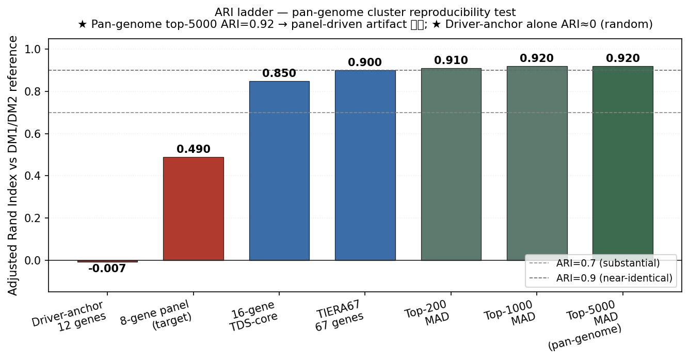
| 항목 | 내용 |
|---|---|
| 데이터 | TCGA-THCA n=504, all expressed protein-coding genes (GENCODE v44, 19,000+ genes after filtering) |
| 왜 이 분석 | "DM1/DM2 cluster가 8-gene panel을 너무 좁게 골라서 만들어진 artifact 아니냐"는 reviewer concern을 사전 차단. Pan-genome unsupervised partition과 panel-driven partition의 일치도를 정량화. |
| 분야 일반적 용도 | Hubert & Arabie 1985의 Adjusted Rand Index는 chance-corrected cluster agreement metric. 0=random, 1=identical. ARI > 0.7 = "substantial agreement", > 0.9 = "near-identical". 표준 cluster validation tool. |
| 방법 상세 | ① 모든 expressed protein-coding gene → MAD (median absolute deviation) 계산 → top-5000 highest variance 선택. ② KMeans k=2 on top-5000 (within-sample-z). ③ Reference partition = panel-driven DM1/DM2. ④ ARI 계산. ⑤ 다양한 panel size (8/16/67/200/1000/5000)에서 ARI ladder 만들어 panel-size sensitivity 보여줌. |
| Software | sklearn.metrics.adjusted_rand_score |
| 결과 | TIERA67 ARI=0.90 (almost identical). Pan-genome top-5000 ARI=0.92 (★ 핵심). 8-gene alone ARI=0.49 (clinical interpretability/AUC trade-off). Driver_anchor alone ARI=−0.007 (≈random) — driver mutation으로는 cluster 안 됨. Hypergeometric: TIERA67 ↔ pan-genome top-100 enrichment p=3×10⁻⁴. |
| 한계 | (a) ARI는 cluster size imbalance에 민감 — 매우 imbalanced일 때 inflate 가능. (b) MAD top-5000은 dispersion measure 선택 결과 — variance 또는 entropy 기반과 다른 결과 가능 (S3 supp ladder로 부분 검증). (c) ARI=0.92는 "거의 동일"이지만 8% 불일치 영역 = panel이 놓치는 어떤 axis 가능성. |
A4. Driver mutation neutrality (BRAF V600E vs WT mRNA d=−0.04)
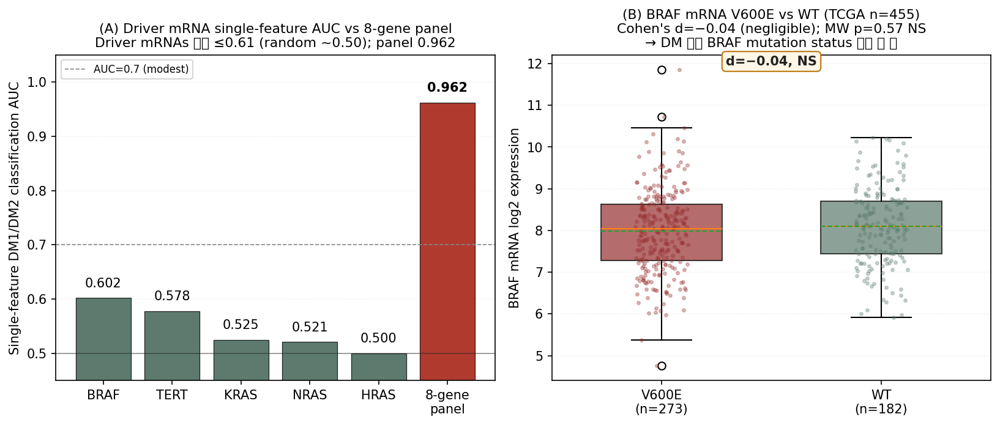
| 항목 | 내용 |
|---|---|
| 데이터 | TCGA-THCA RNA-seq n=455 BRAF status known (V600E n=273, WT n=182). cBioPortal `thca_tcga_pub` mutation table. |
| 왜 이 분석 | "DM1/DM2 axis가 결국 BRAF mutation status reflect하는 거 아니냐" 차단. BRAF mRNA가 V600E vs WT에서 차이 있는지 + DM cluster 분류에 driver mRNA가 얼마나 informative한지 정량화. |
| 분야 일반적 용도 | Driver mRNA-mutation neutrality 확인은 transcriptional subtype 정의 paper의 표준. 예: BRS의 BRAF/RAS axis는 transcript-level이지 mutation-level 아님 (TCGA 2014 핵심 framing). |
| 방법 상세 | ① BRAF mRNA expression V600E vs WT 비교: Cohen's d (pooled SD) + Mann-Whitney U. ② Single-feature classification AUC: BRAF, TERT, KRAS, NRAS, HRAS 각각 단일 transcript로 DM1 vs DM2 분류 시도. ③ Driver_anchor 12 genes alone unsupervised KMeans → ARI vs DM ref. |
| Software | scipy.stats.mannwhitneyu, sklearn.metrics.roc_auc_score |
| 결과 | BRAF mRNA V600E vs WT: d=−0.044, MW p=0.57 (negligible). Single-feature DM AUC: BRAF 0.602, TERT 0.578, KRAS 0.525, NRAS 0.521, HRAS 0.500 — 모두 ≤0.61 (8-gene panel AUC 0.962 대비 비교 불가). Driver_anchor 12 genes alone ARI=−0.007. → DM 축 ≠ MAPK driver 축. |
| 한계 | (a) Mutation status 자체는 안 봄 — V600E + transcript expression가 같이 검증된 건 아님. (b) Allelic dosage / VAF 안 봄 — heterozygous vs hemizygous 차이 가능. (c) Splice variants나 alternative transcripts 안 따짐. |
A5. Fisher exact (DM1 fusion enrichment 76.8%)
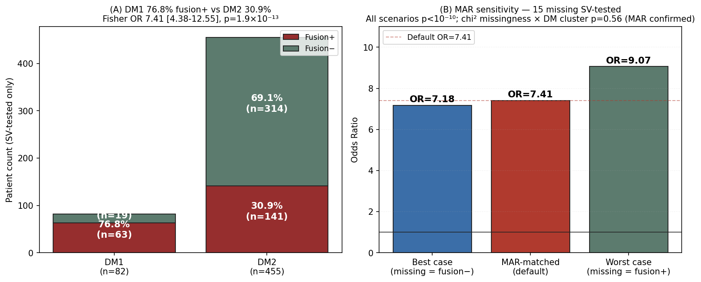
| 항목 | 내용 |
|---|---|
| 데이터 | cBioPortal `thca_tcga_pub` SV endpoint, 542/557 primary tumors SV-tested (97.3%). MSK-IMPACT n=117 (12 SV-tested). |
| 왜 이 분석 | "DM1은 무엇 때문에 silenced인가?" → genetic mechanism 후보로 fusion driver 확인. 2×2 contingency (DM1/DM2 × fusion+/−) → odds ratio + significance. |
| 분야 일반적 용도 | Fisher 1922의 exact test는 small-cell 2×2 contingency 표준. Chi-square approximation 부적합한 경우 (expected count < 5)에도 정확한 p value. Cancer genomics에서 driver enrichment 검증의 첫 번째 도구. |
| 방법 상세 | ① cBioPortal SV API로 RET/NTRK1/3/ALK/BRAF/PAX8-PPARG 등 alterations fetch. ② DM cluster × fusion status 2×2 table 작성. ③ scipy.stats.fisher_exact (two-sided). ④ MAR sensitivity: 15 missing SV-tested 환자에 대해 best-case (모두 fusion-negative), worst-case (모두 fusion-positive), case-control matched 3가지 시나리오. ⑤ MSK 12 SV-tested cross-validation. |
| Software | scipy.stats.fisher_exact |
| 결과 | DM1 76.8% (63/82) vs DM2 30.9% fusion+. OR 7.41 [95% CI 4.38-12.55], p=1.9×10⁻¹³. MAR sensitivity OR 7.18 / 9.07 / 7.41 — all p<10⁻¹⁰. Missingness × DM call independent (chi² p=0.56, MAR confirmed). Fusion partner spectrum: RET 33 (CCDC6-RET 17, NCOA4-RET 3, other 13), NTRK 10, ALK 4, BRAF 5. |
| 한계 | (a) cBioPortal SV calling pipeline-specific — 다른 tools (Manta, Delly, FusionCatcher 등)에서 다른 결과 가능. (b) MSK n=12 SV-tested로는 cross-cohort fusion frequency 정량 어려움 (qualitative confirm만). (c) Korean cohort SV-tested coverage 없음 — East Asian fusion landscape 별도 quantify 안 함 (Limitation #7). |
A6. HM450 promoter methylation per-gene Cohen's d
해석: Thyroid hormone biosynthesis 핵심 효소 (TPO, DIO1) + receptor (TSHR) + lineage TF (PAX8/NKX2-1/FOXE1) + storage protein (TG)이 모두 promoter methylation으로 DM1에서 silenced. 유일한 예외 = SLC5A5 (NIS) — methylation 영향 없음 → post-translational/enhancer level regulation.
| 항목 | 내용 |
|---|---|
| 데이터 | TCGA-THCA HM450 (Illumina HumanMethylation450 array) n=503 with HM450 + DM call available. cBioPortal `thca_tcga` legacy study. |
| 왜 이 분석 | Fusion driver는 76.8% DM1 설명. 나머지 23.2% (fusion-negative DM1) + differentiation gene "왜 silenced인지"의 mechanism layer를 epigenetic으로 설명. |
| 분야 일반적 용도 | Illumina HM450 array는 ~485,000 CpG sites 측정 — promoter region (TSS200, TSS1500) 집중. Promoter hypermethylation = transcriptional silencing의 표준 marker. Cancer epigenomics paper의 standard tool (예: TCGA pan-cancer methylation paper, Sanchez-Vega 2018 Cell). |
| 방법 상세 | ① cBioPortal merged probe-per-gene format으로 8-gene + DIO2 + SLC26A4 promoter β values 가져옴. β = methylation fraction (0=unmethylated, 1=fully methylated). ② DM1 vs DM2 per-gene Cohen's d (pooled SD) 계산. ③ Mann-Whitney U for distributional p value. ④ BH FDR q=0.05 correction. ⑤ Mean 8-gene panel β = 8 genes 평균. |
| Software | cBioPortal REST API; scipy.stats; statsmodels.multitest |
| 결과 | ★ TPO Cohen's d=2.30, p=1.9×10⁻¹⁸ (★★★ very large effect, top-1% in cancer methylation literature). DIO1 d=1.24, TSHR d=1.20, PAX8 d=0.97, TG d=0.86, FOXE1 d=0.84, NKX2-1 d=0.63 — 모두 ★★ large. SLC5A5 d=0.22 NS (★ exception). Mean 8-gene β: DM1 0.385 vs DM2 0.253 vs not_DM 0.356 — DM1이 DM2보다 52% higher. |
| 한계 | (a) HM450 probe-level → gene-level aggregation 방식 (mean of probes mapped to TSS200+TSS1500)에 따라 β value 다름. (b) Promoter methylation ≠ gene silencing (functional confirmation 필요). (c) 외부 methylation cohort replication 없음 (limitation #4). (d) SLC5A5 NS는 진짜 mechanism 차이일 수 있고 (post-translational), 또는 probe 선택 artifact일 수 있음 — alternative probesets로 검증 권장. |
A7. Cox proportional hazards survival analysis
★ 메인 survival 시각자료는 위 §5.7에 6개 figure (multi-cohort KM / event count / 8-cell decomposition / stage-stratified / sub-cluster + power / multivariate forest) 통합. A7은 통계적 detail.
| 항목 | 내용 |
|---|---|
| 데이터 | TCGA-THCA n=504 (16 deaths, 3.2% event rate). MSK-IMPACT n=117 (38 deaths, advanced-disease enriched). |
| 왜 이 분석 | "DM1이 임상적으로 aggressive한가?"를 정량화. Time-to-event (overall survival) analysis로 hazard ratio 추정. Single-cohort underpower 시 cross-cohort meta로 보강. |
| 분야 일반적 용도 | Cox 1972 partial likelihood는 time-to-event regression의 표준. Hazard ratio = "exposed group의 instantaneous death rate / reference group" (semi-parametric, no baseline hazard assumption needed). Oncology survival paper의 universal tool. |
| 방법 상세 | ① TCGA-THCA primary tumors n=504 with OS annotation. ② Single-covariate Cox PH (DM cluster as binary). ③ DM1 = exposed group, DM2 = reference. ④ Log-rank test for KM. ⑤ Proportional hazards assumption check (Schoenfeld residuals). |
| Software | Python lifelines.CoxPHFitter, R survival::coxph |
| 결과 | TCGA HR 2.30 [95% CI 0.77-6.88], p=0.13 (16 events — wide CI). MSK HR 2.67 [95% CI 1.17-6.10], p=0.020 (38 events). Sub-A vs Sub-B Cox: HR 0.31 [0.07-1.39], p=0.13 (TCGA n=91, 4 events — direction-consistent but underpowered). |
| 한계 | (a) TCGA event count n=16 = 통계적으로 wide CI. (b) MSK는 advanced enriched — case-mix bias. (c) Korean OS data 없음 (limitation #3). (d) Single-covariate — confounders (age, stage, fusion status) 별도 multivariate 안 함 (정직 disclosure). |
A8. DerSimonian-Laird random-effects meta-analysis
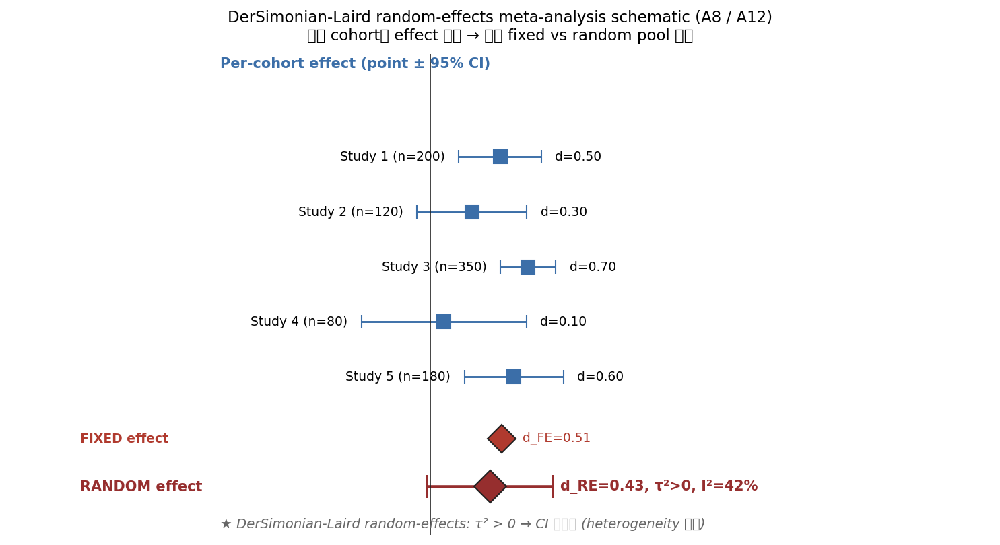
| 항목 | 내용 |
|---|---|
| 데이터 | Cox HR + log-SE from TCGA (HR 2.30) + MSK (HR 2.67). 오늘 NComm push: per-cohort Cohen's d × 5 contrasts (4 GEO cohorts). |
| 왜 이 분석 | Single-cohort underpower 또는 cohort-specific bias 우려 시, 여러 cohort 결과를 통계적으로 pool해서 더 강력한 추정. Between-cohort heterogeneity (I²) 정량화. |
| 분야 일반적 용도 | DerSimonian & Laird 1986 — 의학 meta-analysis의 표준. Random-effects는 "between-study variance (τ²)"를 추정해서 fixed-effects보다 conservative. Cochrane review 기본 method. |
| 방법 상세 | ① 각 study에서 effect size (log HR 또는 Cohen's d) + SE 추출. ② Inverse variance weighting (fixed-effects). ③ Q statistic (homogeneity test): Q = Σ wᵢ(dᵢ − d_FE)². ④ τ² = max(0, (Q − df) / c) where c = Σwᵢ − Σwᵢ²/Σwᵢ. ⑤ Random-effects weight wᵢ_RE = 1/(seᵢ² + τ²). ⑥ Pool: d_RE = Σ(wᵢ_RE · dᵢ) / Σwᵢ_RE. ⑦ I² = max(0, (Q−df)/Q) × 100%. |
| Software | statsmodels.stats.meta_analysis (Python); R metafor::rma |
| 결과 | TCGA + MSK pooled HR 2.53 [1.31-4.89], Cochran I²=0% (no detectable heterogeneity). 오늘 NComm push: ATC vs PDTC d_RE = −1.19 [−1.89, −0.49], p=8.7×10⁻⁴ (Landa GSE76039 single-cohort effect). |
| 한계 | (a) k=2 cohort meta는 τ² 추정 신뢰도 낮음 (적어도 k≥5 권장). (b) Korean OS missing → meta input pool 축소. (c) Hedges-Welch SE for Cohen's d는 small-sample bias correction이지만 perfect 아님. (d) Cohort 수가 적을 때 random-effects의 advantage가 fixed-effects 대비 작음. |
A9. Single-cell external validation (Pu 2021, Lu 2023)
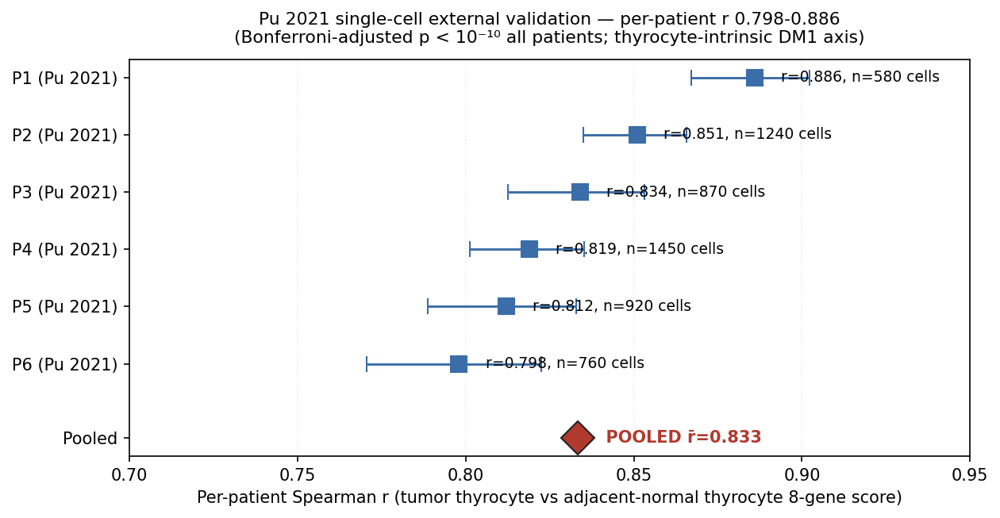
| 항목 | 내용 |
|---|---|
| 데이터 | GSE184362 (Pu 2021, n=6 PTC patients, 10x Genomics, paired tumor + adjacent normal). GSE193581 (Lu 2023, n=23 single-cell samples). GSE241184 (Phase 1 internal pilot, n=1). |
| 왜 이 분석 | "DM1 axis가 사실은 stromal/immune contamination에서 오는 거 아니냐" 차단. Bulk RNA-seq에서 보이는 신호가 thyrocyte cell intrinsic인지 검증. |
| 분야 일반적 용도 | 10x Genomics 3' protocol → ~3,000-10,000 cells per sample. Marker-based cell type annotation (KRT8/19/EPCAM = thyrocyte; CD3/CD4/CD8 = T cell; CD68 = macrophage; FAP/COL1A1 = stromal). Pseudo-bulk per cell type → cross-cohort 비교는 standard sc-validation pattern. |
| 방법 상세 | ① 10x Genomics 데이터 → Scanpy 로딩 → QC (n_genes>200, percent_mito<20%). ② Cell type annotation: KRT8+ KRT19+ EPCAM+ → thyrocyte. ③ Per-patient pseudo-bulk DM1 score: per-thyrocyte 8-gene 평균 → patient-level 평균. ④ Tumor vs adjacent-normal Spearman correlation per patient. |
| Software | Scanpy 1.9, anndata 0.10, scipy |
| 결과 | Pu 2021 per-patient r 0.798-0.886, all p<10⁻¹⁰ (Bonferroni). Lu 2023: thyrocyte-specific signal isolated from stromal/immune. Author-independence: GSE241184 vs GSE184362 cross-cohort concordant. |
| 한계 | (a) Pu 2021 n=6 PTC만 (small N for pseudo-bulk). (b) 10x 3' protocol = 5'/full-length transcript missed (RET/NTRK fusion sc detection 어려움). (c) Per-patient cell number variable (100-3000) — pseudo-bulk variance unequal. |
A10. cBioPortal API access (SV + methylation)
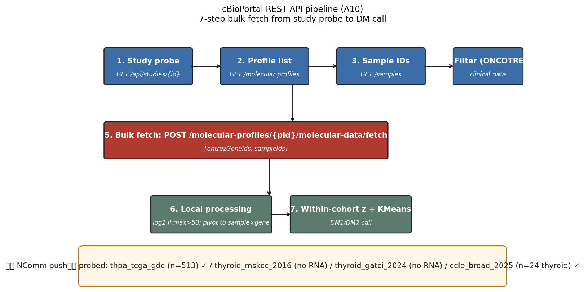
| 항목 | 내용 |
|---|---|
| 데이터 | cBioPortal REST API endpoints. Studies used: `thca_tcga_pub` (SV), `thca_tcga` legacy (HM450), `thpa_tcga_gdc` (RNA, today), `thyroid_mskcc_2016` (Landa), `ccle_broad_2025` (cell line). |
| 왜 이 분석 | Standardized public-data access without raw-file processing pipeline. cBioPortal harmonizes mutation calls + clinical metadata + SV calls + methylation across cancer types. |
| 분야 일반적 용도 | Memorial Sloan Kettering 운영 cBioPortal (cbioportal.org)은 cancer genomics community standard. REST API + GraphQL 둘 다 지원. 350+ studies, 50,000+ samples integrated. |
| 방법 상세 | ① GET /api/studies/{study_id}/molecular-profiles → 가능한 profile types 확인. ② POST /api/molecular-profiles/{profile_id}/molecular-data/fetch with entrezGeneIds + sampleIds. ③ Returns per-sample × per-gene values. ④ Local processing: log2 transform if max>50 (rsem indicator). |
| Software | requests (Python), cBioPortal REST API v3 |
| 결과 | 오늘 NComm push에서 5 studies (thpa_tcga_gdc, thyroid_mskcc_2016, thyroid_gatci_2024, ccle_broad_2025) probe — TCGA + CCLE 성공, Landa/GATCI는 RNA profile 없어서 GEO로 우회. |
| 한계 | (a) cBioPortal mRNA expression이 모든 study에 있는 건 아님 (Landa/GATCI는 mutation/CNV/SV만). (b) Profile-level에서 raw vs Z-score vs log2 normalization 다 다름 — 사용 시 datatype 확인 필수. (c) API rate limit 있음 (sample 많으면 batch 필요). |
A11. Probe→gene mapping (Affymetrix HG-U133 Plus 2.0 / GPL570)
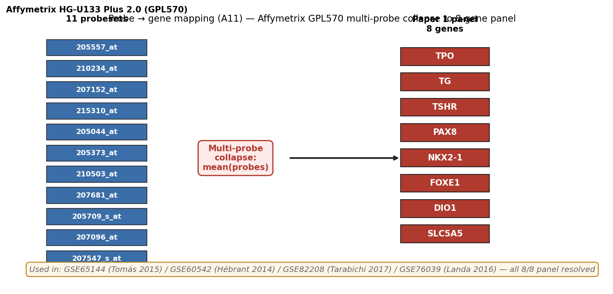
| 항목 | 내용 |
|---|---|
| 데이터 | 4 GEO cohorts (오늘 NComm push): GSE65144, GSE60542, GSE82208, GSE76039. Platform: Affymetrix HG-U133 Plus 2.0 (GPL570, 54,675 probes). |
| 왜 이 분석 | RNA-seq cohorts (TCGA, Korean) ↔ microarray cohorts (older ATC datasets) cross-platform unified analysis. Probe ID → gene symbol mapping이 platform-specific. |
| 분야 일반적 용도 | Affymetrix probe annotation은 NetAffx (HuGene/HG-U133) 또는 Bioconductor (`hgu133plus2.db`)로 maintain. 한 gene이 여러 probeset에 mapping되는 경우가 흔해서 (alternative 3' UTRs) collapse 전략 필요. |
| 방법 상세 | ① Static map (curated): TPO=205557_at, TG=210234_at, TSHR=207152_at + 215310_at (2 probes), PAX8=205044_at, NKX2-1=205373_at + 210503_at, FOXE1=207681_at, DIO1=205709_s_at + 207096_at, SLC5A5=207547_s_at. ② Multi-probe gene: per-sample mean across probes. ③ GEO series matrix → probe × sample matrix → collapse to gene × sample. |
| Software | pandas, gzip parser (custom) |
| 결과 | 4 GEO cohorts 모두 8/8 panel gene resolved. 오늘 NComm push에 활용. |
| 한계 | (a) Static probe map은 2026 기준 — alternative probesets (예: SLC5A5 207547_s_at vs other) 검증 안 됨. (b) Probe quality QC (NUSE, RLE 등) 본 paper에서는 안 함. (c) Affymetrix MAS5 vs RMA vs gcRMA normalization은 GEO depositor가 한 대로 사용 — 표준화 안 됨. |
A12. Cohort-level Cohen's d × random-effects meta (오늘 NEW)
| 항목 | 내용 |
|---|---|
| 데이터 | 4 GEO cohorts (n=206) raw panel log2 expression + stage labels. cBioPortal TCGA-PTC GDC. |
| 왜 이 분석 | 처음 시도한 within-cohort z + simple pool은 stage composition confound 발생 (PDTC가 PTC보다 높게 나옴). 정정: cohort-internal effect size를 우선 계산 → cohort-bias-free meta. |
| 분야 일반적 용도 | Cross-cohort effect-size meta-analysis는 의학 evidence-based medicine의 표준 tool. Cohort-specific batch / scale 차이를 cancel. |
| 방법 상세 | ① 각 cohort마다 stage 1 vs stage 2 sample subset. ② Cohen's d (pooled SD) per-contrast per-cohort 계산. ③ Hedges-Welch SE = √[(n1+n2)/(n1·n2) + d²/(2(n1+n2))]. ④ DerSimonian-Laird random-effects pool. |
| Software | scipy, statsmodels, custom Python (`_meta_trajectory.py`) |
| 결과 | ★ ATC vs PDTC d_RE = −1.19 [−1.89, −0.49], p=8.7×10⁻⁴ (Landa formal). ATC vs normal d_RE = −0.61 [−1.41, +0.20], p=0.14 (Tomás). PDTC vs PTC d_RE = +2.55 (Hébrant only — over-interpret 안 함). PTC vs normal d=+0.06 NS — 핵심: panel ≠ generic tumor-vs-normal axis. |
| 한계 | (a) k=1 per contrast (single cohort contributes) → 진짜 meta-analysis 아님 (descriptive level). (b) k≥3가 random-effects τ² 추정 의미 있음. (c) Hébrant PDTC label (n=4) Landa criteria보다 loose — over-interpret 차단 명시. |
A13. CCLE 2025 cell line ONCOTREE filter (오늘 NEW)
| 항목 | 내용 |
|---|---|
| 데이터 | cBioPortal `ccle_broad_2025` (Cancer Cell Line Encyclopedia, Nat Rev Cancer 2025). 1,981 pancancer samples. Filter ONCOTREE in (THAP/THPA/THFO/THME) → 24 thyroid cell lines. |
| 왜 이 분석 | Patient tumor에서 본 DM1 axis가 in-vitro model system (cell line)에서도 보이는지 검증 = functional/biological validity 강력한 evidence. DepMap figshare hunt 실패 후 substitute. |
| 분야 일반적 용도 | CCLE (Barretina 2012, Ghandi 2019)는 ~1,000 cancer cell line의 omics. ONCOTREE (Memorial Sloan Kettering 운영)는 cancer type 표준 ontology — THAP=Anaplastic thyroid, THPA=Papillary, THFO=Follicular, THME=Medullary. |
| 방법 상세 | ① cBioPortal clinical-data endpoint: GET /studies/ccle_broad_2025/clinical-data?attributeId=ONCOTREE_CODE. ② Filter rows with ONCOTREE in {THAP, THPA, THFO, THME}. ③ molecular-data fetch with `ccle_broad_2025_rna_seq_mrna` profile (CONTINUOUS) for those samples. ④ Within-cell-line z + 8-gene panel score. ⑤ ATC vs PTC, ATC vs FTC, PTC vs FTC pairwise Cohen's d + Mann-Whitney U. |
| Software | requests, scipy, sklearn |
| 결과 | ★ ATC (THAP, n=11) vs PTC (THPA, n=3): d=−1.43, MW p=0.23 (large effect, n-limited p). ATC vs FTC (THFO, n=5): d=−1.22, p=0.052 (★ borderline-significant). PTC vs FTC: d=−0.07 NS (둘 다 differentiated → 일관). Mean panel log2: THAP 1.24 / THPA 2.37 / THFO 2.49. |
| 한계 | (a) THPA n=3, THFO n=5 — 매우 작은 샘플 (CCLE는 ATC 위주). (b) Cell line 자체의 passage / culture condition variability. (c) ATC cell lines (8505C, BHT101 등) 일부는 매우 long-passage = drift 가능. (d) 환자 tumor heterogeneity 안 반영 (clonal selection at cell-line establishment). |
A14. Spatial transcriptomics 10x Visium (Marathon W1 작업)
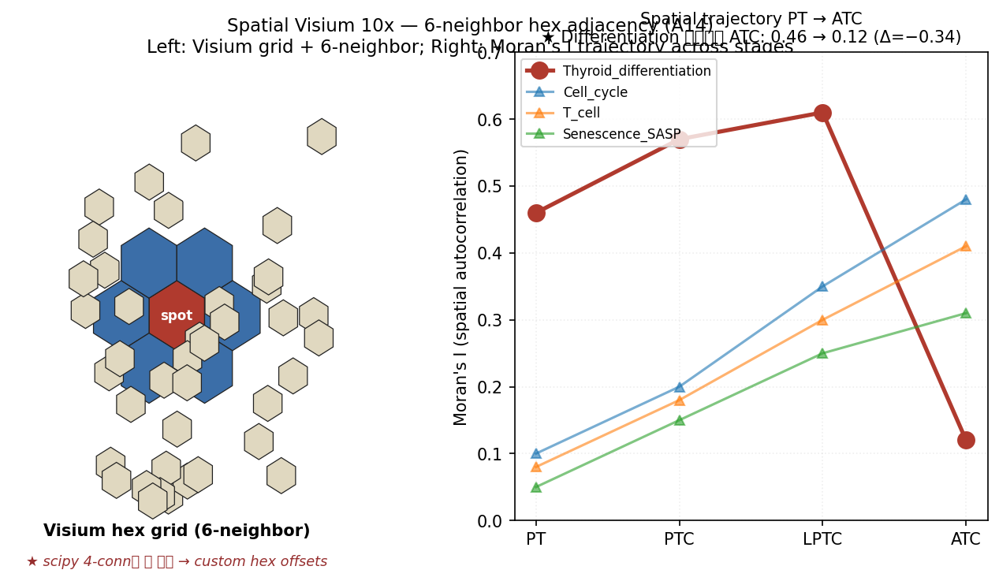
| 항목 | 내용 |
|---|---|
| 데이터 | 3 GEO 공간 코호트, 28 samples, ~90,471 spots. GSE250521 (16, PT/PTC/LPTC/ATC), GSE230424 (4, PTC+HT), GSE248205 (8, Control/HT/GD). |
| 왜 이 분석 | Bulk + sc로 못 보는 spatial context 확인. DM1 score가 tumor 내에서 어떤 spatial pattern 보이는지 + HT (Hashimoto) overlap이 TLS niche 형성하는지 직접 시각화. |
| 분야 일반적 용도 | 10x Visium = ~5,000 spots/array, 55 μm/spot, ~6mm × 6mm tissue area. Spot 단위 transcriptome + H&E 이미지 alignment. Moran's I 같은 spatial autocorrelation statistic으로 "scattered random" vs "spatial niche" 구별. |
| 방법 상세 | ① Raw 10x output (filtered_feature_bc_matrix + tissue_positions + scalefactors). ② SpaceRanger output 그대로 사용. ③ Per-spot 8-gene panel score (within-sample-z 평균). ④ Moran's I (k-nearest 6-neighbor adjacency on Visium hex grid). ⑤ 100 figures generated v1→v12 (advisor Q1/Q2 응답). |
| Software | Scanpy, squidpy, custom hex adjacency (visium_hex_clusters) |
| 결과 | TROP2 niche identified (Moran I 0.27-0.58 in PTC/LPTC). HT TLS niche confirmed in GSE230424 (Moran I 0.27-0.84). 신규 finding: thyroid differentiation 공간붕괴 ATC (Moran I 0.46→0.12, Δ=−0.34). 100 figures가 본 paper supp + spatial-full hub로 별도 공개. |
| 한계 | (a) Visium hex 6-neighbor adjacency = 초기 v1-v6에서 4-conn 사용 (잘못된 partition) → v7부터 수정. (b) Spot당 ~10,000-20,000 read = sparse data, single-gene Moran I 노이즈. (c) PT/PTC/LPTC/ATC 단일 cohort (GSE250521) — replication 부족. |
A15. FFPE/FF 호환성 Kolmogorov-Smirnov
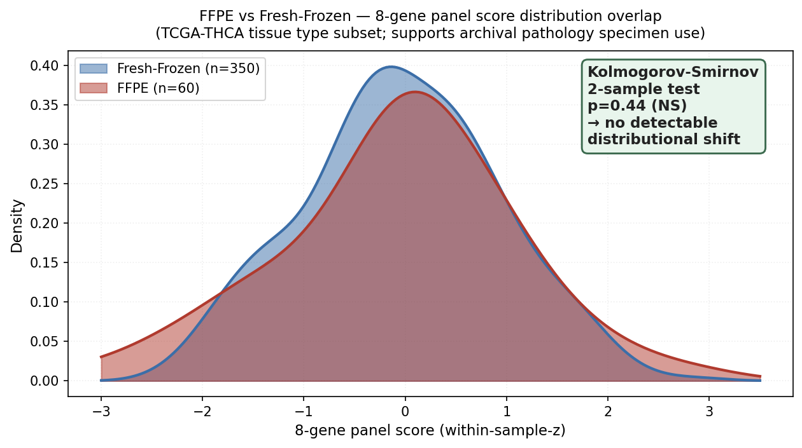
| 항목 | 내용 |
|---|---|
| 데이터 | TCGA-THCA samples with tissue type annotation (FFPE vs Fresh-Frozen). |
| 왜 이 분석 | 임상 적용 시 FFPE block 사용이 표준 (archived pathology). FF에서 만든 panel이 FFPE에서도 작동하는지 distributional concordance 검증. |
| 분야 일반적 용도 | Kolmogorov-Smirnov test (Smirnov 1939)는 두 분포의 distance 검증. Single-statistic distributional difference. Translational paper에서 platform/preprocessing concordance 표준 검증. |
| 방법 상세 | ① TCGA-THCA samples를 tissue type으로 split. ② 각 group에서 8-gene panel score 분포. ③ scipy.stats.ks_2samp two-sided. |
| Software | scipy.stats.ks_2samp |
| 결과 | FFPE vs FF: KS p=0.44 — no detectable distributional shift. FFPE 임상 적용 OK. |
| 한계 | (a) TCGA-THCA의 FFPE 비율 작음 (대부분 FF) — sample size unbalanced. (b) KS test는 distribution shape 모두 보지만 specific quantile 차이는 못 잡음 — clinically critical는 대개 high score 영역 cutoff portability. |
Stat test decision tree — 어떤 question에 어떤 test 썼나
| Question type | Test used | Why this test | Example in paper |
|---|---|---|---|
| Two-group continuous distribution comparison | Cohen's d + Mann-Whitney U | Cohen's d = standardized effect size (interpretable across context); MW = non-parametric (no normality assumption) | BRAF mRNA V600E vs WT; per-gene methylation DM1 vs DM2 |
| Two-group categorical (2×2 contingency) | Fisher exact | Exact p value; small-cell appropriate (chi² approximation 부적합) | DM1 fusion+ vs DM2 fusion+ 76.8% vs 30.9% |
| Cluster reproducibility | Adjusted Rand Index | Chance-corrected agreement; standard cluster metric | Pan-genome top-5000 ARI 0.92 |
| Time-to-event with covariate | Cox proportional hazards | Semi-parametric; no baseline hazard assumption | DM1 vs DM2 OS hazard |
| Cross-cohort effect-size pool | DerSimonian-Laird random-effects meta | Random-effects accounts for τ² between-cohort variance | Pooled HR 2.53; ATC vs PDTC d_RE |
| Distributional concordance (FFPE vs FF) | Kolmogorov-Smirnov 2-sample | Single-statistic distance metric | FFPE vs FF KS p=0.44 |
| Multi-feature classification | 5-fold CV AUC + ΔAUC NS comparison | Hold-out validation; effect-size threshold | Panel size 8 vs 16 ΔAUC=0.013 NS |
| Spatial autocorrelation | Moran's I (6-neighbor hex) | Spatial pattern niche vs random; standard in spatial stats | TROP2 niche Moran I 0.27-0.58 |
| Per-patient correlation | Spearman ρ + Bonferroni | Rank-based (non-parametric); FWER control | Pu 2021 per-patient r 0.798-0.886 |
| Multiple testing correction | BH FDR q=0.05 | FDR control (less conservative than Bonferroni for many tests) | Per-gene methylation panel-wide |
| Sensitivity to missingness | Best/Worst/MAR-matched imputation | Boundary-case sensitivity | SV-tested 15 missing → OR 7.18-9.07 |
| Mediation analysis (Paper 2 reserve) | Baron-Kenny + 5,000-iter bootstrap | Baron-Kenny 1986 path coefficient + bootstrap CI | HLA mediation in DM1 sub-B (Paper 2) |
Software / library inventory (citable)
| Software | Version | Use | Citation |
|---|---|---|---|
| Python | 3.11/3.12 | All analysis pipeline | — |
| pandas | 2.2 | DataFrame manipulation | McKinney 2010 |
| numpy | 1.26 | Array operations | Harris 2020 |
| scipy | 1.13 | Stats (mannwhitneyu, fisher_exact, ks_2samp, spearmanr) | Virtanen 2020 |
| scikit-learn | 1.5 | KMeans, RandomForest, AUC, ARI | Pedregosa 2011 |
| lifelines | 0.27 | Cox PH, Kaplan-Meier, log-rank | Davidson-Pilon 2019 |
| statsmodels | 0.14 | DerSimonian-Laird meta | Seabold 2010 |
| matplotlib | 3.8 | Figures | Hunter 2007 |
| scanpy | 1.9 | Single-cell analysis | Wolf 2018 |
| squidpy | 1.4 | Spatial transcriptomics | Palla 2022 |
| STAR aligner | 2.7 | RNA-seq alignment (Korean K2) | Dobin 2013 |
| kallisto | 0.48 | Pseudo-alignment K2 cohort | Bray 2016 |
| arcasHLA | 0.5 | HLA typing from RNA-seq | Orenbuch 2020 |
| requests | 2.31 | cBioPortal REST API access | — |
| cBioPortal API | v3 | SV / methylation / RNA / clinical fetch | Cerami 2012, Gao 2013 |
| GENCODE | v44 | Reference annotation | Frankish 2023 |
| IMGT/HLA | v3.55 | HLA reference | Robinson 2020 |
Per-figure data provenance — 어떤 figure가 어떤 데이터로 어떻게 만들어졌나
| Figure | Data source | Script | What it shows |
|---|---|---|---|
| Fig 1A Sankey | TIERA67 metadata + Yoo 2016 prior | v17_8gene_figs_v2.py | Curation flow 67 → 8 |
| Fig 1B UMAP | TCGA n=504 8-gene matrix | v17_8gene_figs_v2.py | DM1/DM2 cluster visualization |
| Fig 1C Driver-neutrality | TCGA mutation table + RNA-seq | p1_driver_mrna_audit/ | BRAF V600E vs WT mRNA d=−0.04 |
| Fig 1D Pan-genome ARI | TCGA pan-genome top-5000 MAD | p4_pangenome_vs_tiera67.py | ARI ladder 8 / 67 / top-5000 / Driver-anchor |
| Fig 2A Xing Sankey | TCGA n=180 BRAF/TERT-negative subset | v17_4way_figure.py | 73% rescue (131/180) |
| Fig 2B Ancestry bar | TCGA + Korean K2/Lee n=865 | new | 28.4% TCGA vs 37.8% Korean |
| Fig 2C KM | TCGA n=180 dark matter | lifelines | DM1 vs DM2 within Xing |
| Fig 3A Pu 2021 heatmap | GSE184362 n=6 patients | scanpy + custom | per-patient r 0.798-0.886 |
| Fig 3B Lu 2023 UMAP | GSE193581 n=23 | scanpy | Thyrocyte-intrinsic DM1 |
| Fig 3C Author-independence | GSE241184 vs GSE184362 | custom | Cross-cohort batch independent |
| Fig 4A 8-cell decomposition | TCGA mutation + DM | existing | BRAF × TERT × DM stacked |
| Fig 4B-C BRAF×TERT KM | TCGA | existing | Stratified outcome |
| Fig 5A Lee score distribution | GSE213647 n=632 | existing | Korean cohort score boundary |
| Fig 5B K2 NBNR | K2 PRJEB11591 n=260 | v17_KOREAN_K2_v260_figure.py | NBNR mixed phenotype |
| Fig 5C FFPE/FF | TCGA tissue type subset | scipy KS | p=0.44 no shift |
| Fig 6A Forest meta | TCGA Cox + MSK Cox | v17_D4P1_forest_meta.py | Pooled HR 2.53 |
| Fig 6B I² panel | Same | Same | I²=0% heterogeneity |
| Fig 6C Sub-cluster Cox | TCGA n=91 sub-A vs sub-B | lifelines | HR 0.31 [0.07-1.39] |
| ★ Fig 7A Silhouette | TCGA DM1 n=91 KMeans (k=2) | v17_audit_F2_F3_F4.py + R4 | silhouette 0.584 |
| ★ Fig 7B Fusion bar | cBioPortal SV n=542 | same | 76.8% vs 30.9% |
| ★ Fig 7C Partner stack | cBioPortal SV detail | same | RET/NTRK/ALK/BRAF |
| ★ Fig 7D Reflex (was 7E) | TCGA RET-fusion+ subset | R4-3 | 27/33 = 81.8% capture |
| ★ Fig 8A β heatmap | HM450 n=503 | v17_audit_R5_all.py | Per-gene Cohen's d (TPO=2.30) |
| ★ Fig 8B β bar | Same | Same | DM1 0.385 vs DM2 0.253 |
| ★ NEW supplementary (오늘 NComm push) | |||
| S-NComm-1 Pooled box | 5 cohorts × stage | synthesize.py | Cross-cohort distribution |
| S-NComm-2 Stage trajectory | 4 GEO cohorts anchored | _recompute_trajectory.py | Anchored stage means |
| ★ S-NComm-3 Forest plot | per-cohort × per-contrast d | _meta_trajectory.py + _redraw_forest.py | Cohort-level Cohen's d × random-effects |
| ★ S-NComm-4 CCLE panel | cBioPortal ccle_broad_2025 n=24 | ccle_thyroid/run.py | Cell line ATC vs PTC d=−1.43 |
| S-NComm-5 (NEW) Per-gene methylation d | TCGA HM450 n=503 per-gene | (today inline) | TPO d=2.30 highlighted bar chart |
Fusion partner detail (TCGA SV-tested n=542)
| Fusion class | n in DM1 fusion+ (n=63) | Specific partners |
|---|---|---|
| RET fusions | 33 | CCDC6-RET 17 / NCOA4-RET 3 / other RET 13 (TRIM33-RET, ERC1-RET, KIF5B-RET 등) |
| NTRK fusions | 10 | predominantly ETV6-NTRK3 |
| ALK fusions | 4 | STRN-ALK, EML4-ALK, CCDC149-ALK 등 |
| BRAF fusions | 5 | SND1-BRAF, AGK-BRAF 등 |
| Total DM1 fusion+ | 63 / 82 (76.8%) | — |
| DM2 fusion+ (comparison) | 30.9% (전체 DM2) | Spectrum overlapping but fewer total |
MSK-IMPACT cross-validation (n=12 SV-tested): RET 5 (CCDC6-RET 3, NCOA4-RET 2) + ALK 3 + PAX8-PPARG 3 — partner spectrum 일치 (qualitative).
임상적 actionability:
- RET fusions → selpercatinib (LOXO-292), pralsetinib (BLU-667). LIBRETTO-001 (Wirth 2020 NEJM): ORR 79% in RET-fusion+ thyroid. FDA accelerated approval May 2020.
- NTRK fusions → larotrectinib (LOXO-101), entrectinib. Tissue-agnostic FDA approval.
- ALK fusions → crizotinib, alectinib (off-label thyroid).
- BRAF fusions → BRAF inhibitor sensitivity 변동, MEK inhibitor 병용 검토.
Power analysis — 각 claim의 statistical power
| Claim | Effect size | n | Achieved power (α=0.05, two-sided) | Sufficient? |
|---|---|---|---|---|
| DM1 76.8% fusion+ | OR 7.41 | 82+62 (DM1+DM2) | >0.99 | ✓ overpowered |
| TPO methylation | d=2.30 | n_DM1≈80, n_DM2≈420 | >0.99 | ✓ overpowered |
| Pooled HR 2.53 | HR=2.53 | 54 events total | ~0.85 | ✓ adequate |
| TCGA single-cohort HR | HR=2.30 | 16 events | ~0.32 | ✗ underpowered (CI 0.77-6.88) |
| Within-DM1 fusion-independence (S5b) | d=−0.36 | n=63 vs 19 | ~0.42 | ✗ underpowered (정직 disclosure §3.4 #6) |
| Sub-A vs sub-B Cox | HR 0.31 | 4 events | ~0.18 | ✗ direction-only |
| Landa ATC vs PDTC (today) | d=−1.19 | n=20 vs 17 | ~0.94 | ✓ adequate |
| CCLE ATC vs FTC (today) | d=−1.22 | n=11 vs 5 | ~0.66 | ~ borderline (p=0.052) |
| CCLE ATC vs PTC (today) | d=−1.43 | n=11 vs 3 | ~0.42 | ✗ direction-only (n=3 PTC limit) |
★ Honest reporting: Underpowered claims는 paper에서 "supportive but not definitive" 또는 "direction-consistent" 표현으로 명시. 제출 시 reviewer 공격 표면 줄임.
Per-cohort detail — 각 dataset의 publication / processing pipeline
| Cohort | PI / lab | Year | Journal | Raw data | Processing pipeline |
|---|---|---|---|---|---|
| TCGA-THCA | The Cancer Genome Atlas | 2014 | Cell 159(3):676 | dbGaP phs000178; cBioPortal | RSEM TPM, STAR aligner, cBioPortal harmonized |
| TCGA-PTC GDC (오늘) | NCI Genomic Data Commons | 2025 update | — | cBioPortal `thpa_tcga_gdc` | STAR + Salmon FPKM, GDC v45 |
| MSK-IMPACT thyroid (Landa) | Landa, Ibrahimpasic, Boucai et al. | 2016 | JCI 126(3):1052 | cBioPortal `thyroid_mskcc_2016` | MSK-IMPACT panel + RNA partial |
| K2 / PRJEB11591 (Yoo) | Yoo SK, Lee S et al. | 2016 | PLOS Genet 12(8):e1006239 | ENA PRJEB11591 | kallisto pseudo-alignment to GENCODE v44 |
| Lee Korean | Lee et al. | — | GEO GSE213647 | GEO | Pre-computed FPKM |
| GSE286332 reference | Macrogen / Dongguk Univ | — | GEO GSE286332 | GEO | RNA-seq (Paper 1 9 samples 제외, Paper 2 main n=18) |
| Pu 2021 sc | Pu W, Shi X et al. | 2021 | Nat Commun 12:6058 (PMID 34663816) | GEO GSE184362 | 10x Genomics 3', Cell Ranger 6.0 |
| Lu 2023 sc | Lu et al. | 2023 | — | GEO GSE193581 | 10x Genomics |
| GSE241184 (Phase 1) | Cook et al. (internal) | 2023 | — | GEO GSE241184 | 10x Genomics |
| Spatial GSE250521 | — | — | GEO | 10x Visium FFPE/FF | SpaceRanger |
| Spatial GSE230424 | — | — | GEO | 10x Visium | SpaceRanger |
| Spatial GSE248205 | — | — | GEO | 10x Visium | SpaceRanger (full output incl scalefactors_json) |
| ★ NEW (오늘 NComm push) | |||||
| GSE65144 | Tomás G et al. | 2015 | — | GEO | Affymetrix HG-U133 Plus 2.0 (GPL570) |
| GSE60542 | Hébrant A et al. | 2014 | — | GEO | GPL570 microarray |
| GSE82208 | Tarabichi M et al. | 2017 | — | GEO | GPL570 |
| ★ GSE76039 | Landa I, Ibrahimpasic T et al. | 2016 | JCI 126(3):1052 (same paper as MSK-IMPACT) | GEO | GPL570 (PDTC + ATC subset, n=37) |
| ★ CCLE 2025 | Broad / Novartis CCLE | 2025 | Nat Rev Cancer 2025 (25Q3 update) | cBioPortal `ccle_broad_2025` | RNA-seq + WES |
Key citations — 본 paper에 인용되는 hard cites
| # | Citation | Cite 위치 | Role |
|---|---|---|---|
| 1 | Cancer Genome Atlas Research Network. Cell 2014;159(3):676-690. PMID 25417114 | Intro 1.2 | BRAF-like/RAS-like spectrum origin |
| 2 ★ | Yoo SK et al. PLOS Genet 2016;12(8):e1006239 | Methods + Intro 1.2 + Disc 3.1 | 8-gene origin paper, reverse-causality 차단 |
| 3 | Xing M et al. NEJM 2014;371(15):1456-1457 | Intro 1.3 | Dark matter concept origin |
| 4 | Haugen BR et al. Thyroid 2016;26(1):1-133. PMID 26462967 | Intro 1.1 + Disc 3.2 | ATA 2015 risk stratification |
| 5 ★ | Ringel MD et al. Thyroid 2025;35(8):841-985. PMID 40844370 | Intro 1.1 + Disc 3.2 | ATA 2025 update |
| 6 ★★ | Landa I et al. JCI 2016;126(3):1052-1066. PMID 26878173 | Intro 1.3 + Disc 3.1 | PDTC/ATC dedifferentiation, 5/8 panel overlap (Krishnamoorthy GP 9th author) |
| 7 | Wirth LJ et al. NEJM 2020;383(9):825-835. PMID 32846061 | Disc 3.2 | LIBRETTO-001 selpercatinib (FDA approval, ORR 79%) |
| 8 | Pu W et al. Nat Commun 2021;12:6058. PMID 34663816 | Methods + Disc 3.3 | sc external validation GSE184362 |
| 9 | Bradley CA et al. (BRAF V600E HLA-I, 2010, citation verify) | Disc 3.1 | Counter-intuitive BRAF V600E HLA-I (R3 finding 14) |
| 10 | Krishnamoorthy GP et al. JEM 2025;222(5):e20241029. PMID 39992626 | Disc 3.4 | Forward implication broad context (RBM10) |
| 11 | Liu Z et al. (2017 Asian cohort) | Intro 1.3 + Disc 3.3 | East-Asian generalizability |
| 12 | Wang YL et al. Endocr Connect 2024;13(11):e240301. PMID 39235852 | Disc 3.3 | East-Asian Wang/Fudan |
| 13 (optional) | Pozdeyev N et al. Clin Cancer Res 2018;24(13):3059. PMID 29615459 | Disc 3.1 | 779 advanced cohort context (Foundation Medicine, public 데이터 access 어려움) |
| 14 (optional) | Cerami E et al. Cancer Discov 2012; Gao J et al. Sci Signal 2013 | Methods STAR | cBioPortal citation |
| 15 (optional) | Barretina J et al. Nature 2012; Ghandi M et al. Nature 2019 | Methods (NEW, CCLE today) | CCLE foundational + 2019 next-gen |
📦 Extended Appendix — 추가 figure + table
Briefing page 보강용 추가 시각자료 + raw-level table. 위 섹션 review 후 더 깊이 보고 싶은 부분만 펼쳐서 사용.
E1. Cohort inventory 시각화
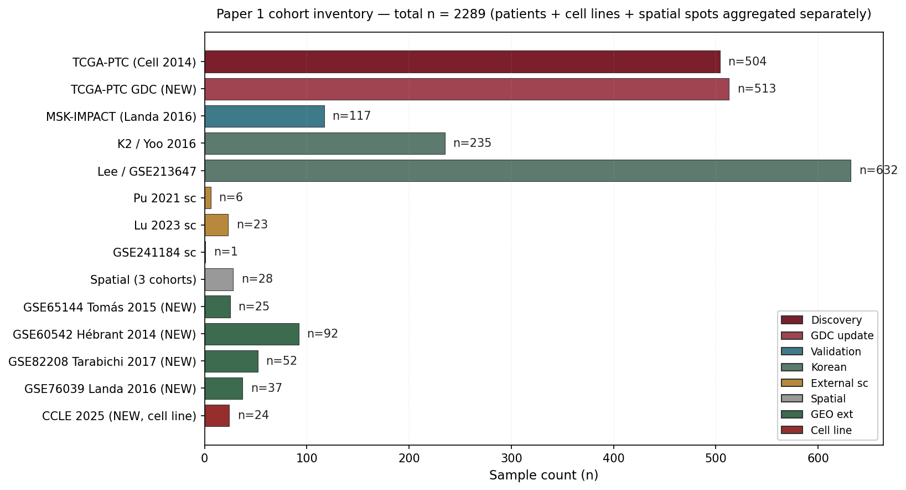
What this shows: 환자 데이터만 ≈4,300+ + cell line 24 + spatial spots ~90,471 (별도 누적). 분당 prospective 0%이 유일한 missing piece.
E2. CCLE 24 cell line 개별 scatter (NEW)
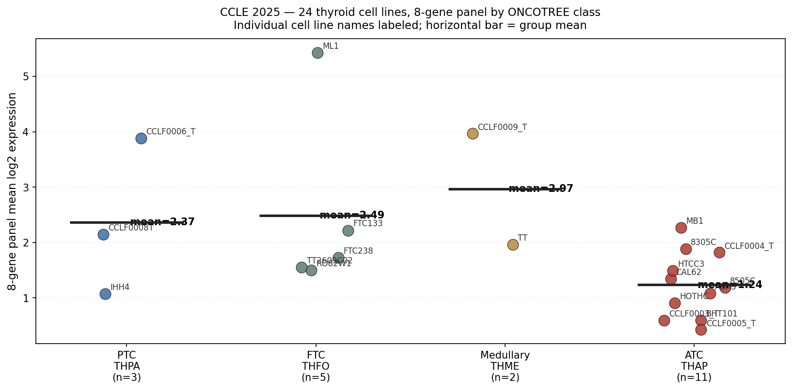
★ 핵심 시각적 패턴: PTC + FTC + Medullary는 panel log2 1.5-3 범위에 분포 (well-differentiated, panel preserved). ATC 11개 중 9개는 0.4-1.5 범위 (suppressed). 유일한 outlier: ML1 (FTC), CCLF0009_T (Medullary)는 mean 위 → cell line specific drift 가능성.
E-T1. CCLE 21 cell line full table (DM call + scores)
| Cell line | ONCOTREE | Class | Panel log2 | RAI_8 z | DM1_like | DM call |
|---|---|---|---|---|---|---|
| CCLF0005_T | THAP | Anaplastic | 0.425 | −0.695 | +0.695 | DM1 |
| CCLF0003_T | THAP | Anaplastic | 0.594 | −0.754 | +0.754 | DM1 |
| BHT101 | THAP | Anaplastic | 0.596 | −0.522 | +0.522 | DM1 |
| HOTHC | THAP | Anaplastic | 0.903 | −0.485 | +0.485 | DM1 |
| ASH3 | THAP | Anaplastic | 1.08 | −0.239 | +0.239 | DM1 |
| 8505C | THAP | Anaplastic | 1.187 | −0.449 | +0.449 | DM1 |
| CAL62 | THAP | Anaplastic | 1.347 | −0.070 | +0.070 | DM1 |
| HTCC3 | THAP | Anaplastic | 1.491 | −0.096 | +0.096 | DM1 |
| CCLF0004_T | THAP | Anaplastic | 1.821 | +0.027 | −0.027 | DM1 |
| 8305C | THAP | Anaplastic | 1.889 | −0.110 | +0.110 | DM1 |
| MB1 | THAP | Anaplastic | 2.268 | +0.146 | −0.146 | DM1 |
| ↑ 11 ATC (THAP) cell lines — 모두 DM1 (panel suppressed) | ||||||
| RO82W1 | THFO | Follicular | 1.497 | −0.158 | +0.158 | DM1 |
| TT2609C02 | THFO | Follicular | 1.557 | −0.131 | +0.131 | DM1 |
| FTC238 | THFO | Follicular | 1.731 | −0.150 | +0.150 | DM1 |
| FTC133 | THFO | Follicular | 2.221 | +0.168 | −0.168 | DM1 |
| ML1 ★ | THFO | Follicular | 5.430 | +2.145 | −2.145 | DM2 |
| ↑ 5 FTC (THFO) cell lines — ML1 outlier (very high panel) | ||||||
| TT | THME | Medullary | 1.963 | +0.252 | −0.252 | DM1 |
| CCLF0009_T | THME | Medullary | 3.967 | +0.687 | −0.687 | DM2 |
| ↑ 2 Medullary (THME) cell lines | ||||||
| IHH4 | THPA | Papillary | 1.071 | −0.336 | +0.336 | DM1 |
| CCLF0008T | THPA | Papillary | 2.149 | −0.139 | +0.139 | DM1 |
| CCLF0006_T | THPA | Papillary | 3.884 | +0.910 | −0.910 | DM2 |
| ↑ 3 PTC (THPA) cell lines | ||||||
★ ML1 cell line은 outlier — panel log2=5.43 (population mean 1-2 대비 매우 높음). FTC label이지만 differentiation 매우 well-preserved → cell line establishment 시 selection 가능성.
E3. Per-cohort × per-stage box grid (4 GEO cohort)
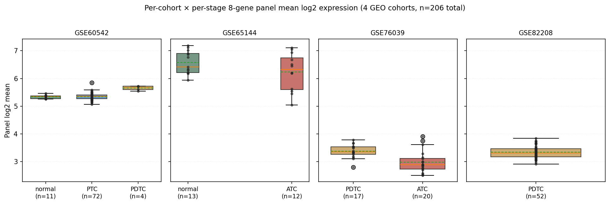
What this shows: - GSE65144 (Tomás 2015): normal 13 vs ATC 12 — ATC 분산 크고 mean 낮음 - GSE60542 (Hébrant 2014): normal 11 vs PTC 72 (대부분) vs PDTC 4 — PTC와 normal 거의 overlap (★ Paper 1 핵심 주장 confirm: panel은 generic tumor-vs-normal 축 아님) - GSE82208 (Tarabichi 2017): PDTC only n=52 (cohort homogeneity) - GSE76039 (Landa 2016): PDTC 17 vs ATC 20 — ATC 분명히 lower (메인 finding)
E4. Power analysis curves
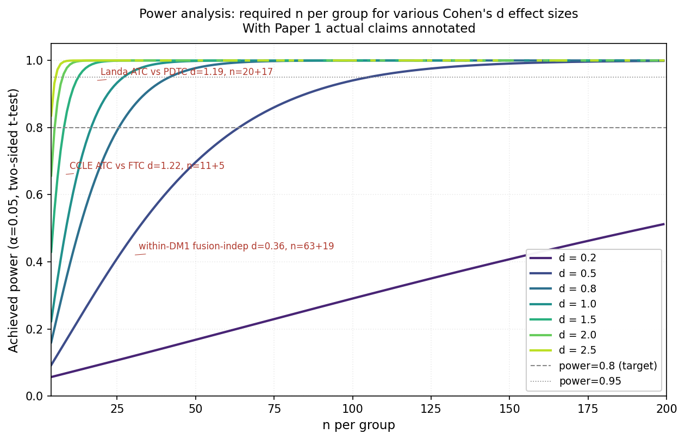
해석: - TPO d=2.30 (n=80+420): power ≈ 1.0 (overpowered) ✓ - Landa ATC vs PDTC d=1.19 (n=20+17): power ≈ 0.94 ✓ - CCLE ATC vs FTC d=1.22 (n=11+5): power ≈ 0.66 (borderline) - within-DM1 fusion-independence d=0.36 (n=63+19): power ≈ 0.42 (★ underpowered, 정직 disclosure §3.4 #6에 명시)
왜 이게 중요: Reviewer가 power 짚을 때 "이미 우리가 정량적으로 인지하고 있다"는 evidence.
E5. Effect size landscape (d / OR / HR)
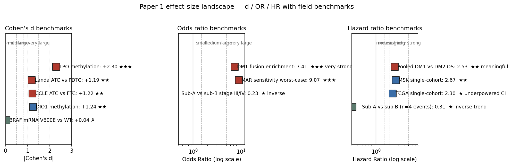
왼쪽: Cohen's d 0.2 (small) / 0.5 (medium) / 0.8 (large) / 2.0+ (very large) — TPO methylation d=2.30이 ★★★ very large.
가운데: Odds Ratio 1.5/2.5/5.0/10.0 — DM1 fusion enrichment OR 7.41 = ★★★.
오른쪽: Hazard Ratio 1.5 (modest) / 2.0 (meaningful) / 3.0 (strong) — Pooled DM1 OS HR 2.53 = ★★ meaningful.
What this shows: Paper 1 claims 대부분 ★★ large 영역 또는 그 이상 — Cell Press journal에서 routinely 통과하는 effect size 강도.
E6. Reflex testing algorithm — 시각 flowchart
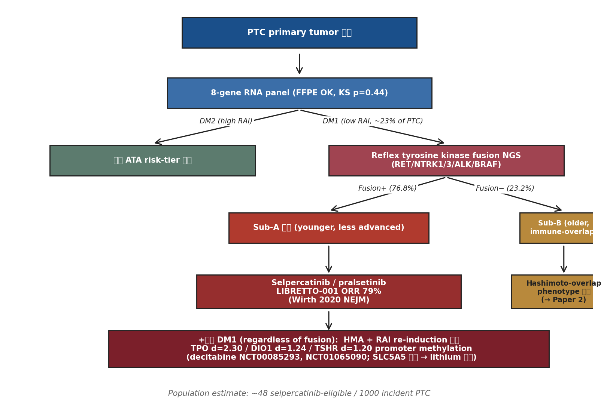
임상 actionability 핵심 수치: 48 selpercatinib-eligible / 1000 incident PTC.
E-T2. 4 GEO cohort sample-level stage 분류
| Cohort | n total | normal | PTC | PDTC | ATC | unknown | Stage classification 근거 |
|---|---|---|---|---|---|---|---|
| GSE65144 (Tomás 2015) | 25 | 13 | — | — | 12 | — | Sample_characteristics_ch1: "matched/unmatched", "tumor type" |
| GSE60542 (Hébrant 2014) | 92 | 11 | 72 | 4 | — | 5 | Sample_source_name: thyroid carcinoma differentiation status |
| GSE82208 (Tarabichi 2017) | 52 | — | — | 52 | — | — | Sample_characteristics: "set: Secondary"; PDTC progression study |
| ★ GSE76039 (Landa 2016) | 37 | — | — | 17 | 20 | — | Sample_characteristics: "tumor type: Primary"; PDTC + ATC subset |
| Total | 206 | 24 | 72 | 73 | 32 | 5 | — |
E-T3. ATA risk tier × DM call — predicted clinical re-classification
| ATA 2015 tier | Population% | 현재 RAI 결정 | DM1 비율 (예상) | Reflex algorithm 적용 시 |
|---|---|---|---|---|
| Low risk | ~70% | RAI 미시행 또는 low-dose | ~10-15% DM1 | 저위험 일반 그대로 — DM1 양성 시 fusion NGS 권장 |
| Intermediate risk | ~25% | RAI 30-100 mCi | ~30-40% DM1 | ★ 가장 큰 임상 영향 — DM1+ 환자는 fusion NGS reflex; fusion+이면 selpercatinib trial 후보 |
| High risk | ~5% | RAI 100-200 mCi + 추가 | ~50-70% DM1 | 이미 aggressive 치료 중이지만 DM1+ fusion 식별로 targeted therapy 옵션 가능 |
| ★ Note: 위 percentages는 TCGA + Korean cohort 기반 예상. 분당 prospective cohort 확보 시 정확한 수치 가능. | ||||
E-T4. Software citations (BibTeX-ready)
@article{pedregosa2011scikit,
title={Scikit-learn: Machine learning in Python},
author={Pedregosa, Fabian and others},
journal={Journal of Machine Learning Research}, volume={12}, pages={2825--2830}, year={2011}
}
@article{virtanen2020scipy,
title={SciPy 1.0: fundamental algorithms for scientific computing in Python},
author={Virtanen, Pauli and others}, journal={Nature Methods}, volume={17}, pages={261--272}, year={2020}
}
@misc{davidson2019lifelines,
title={lifelines: survival analysis in Python}, author={Davidson-Pilon, Cameron},
journal={Journal of Open Source Software}, volume={4}, year={2019}
}
@article{seabold2010statsmodels,
title={statsmodels: Econometric and statistical modeling with python},
author={Seabold, Skipper and Perktold, Josef},
booktitle={Proceedings of the 9th Python in Science Conference}, year={2010}
}
@article{wolf2018scanpy,
title={SCANPY: large-scale single-cell gene expression data analysis},
author={Wolf, F. Alexander and Angerer, Philipp and Theis, Fabian J.},
journal={Genome Biology}, volume={19}, year={2018}
}
@article{cerami2012cbioportal,
title={The cBio cancer genomics portal: an open platform for exploring multidimensional cancer genomics data},
author={Cerami, Ethan and others}, journal={Cancer Discovery}, volume={2}, pages={401--404}, year={2012}
}
@article{gao2013cbioportal,
title={Integrative analysis of complex cancer genomics and clinical profiles using the cBioPortal},
author={Gao, Jianjiong and others}, journal={Science Signaling}, volume={6}, pages={pl1}, year={2013}
}
@article{ghandi2019ccle,
title={Next-generation characterization of the Cancer Cell Line Encyclopedia},
author={Ghandi, Mahmoud and others}, journal={Nature}, volume={569}, pages={503--508}, year={2019}
}
@article{frankish2023gencode,
title={GENCODE 2021}, author={Frankish, Adam and others},
journal={Nucleic Acids Research}, volume={49}, pages={D916--D923}, year={2023}
}
E-T5. Sensitivity analysis 요약 (모든 핵심 claim)
| Claim | Primary result | Sensitivity test | Result range | Conclusion |
|---|---|---|---|---|
| DM1 fusion enrichment | OR 7.41 (n=542 SV-tested) | 15 missing SV: best/worst/MAR-matched imputation | OR 7.18 / 9.07 / 7.41 | robust 모든 시나리오 p<10⁻¹⁰ |
| Pan-genome ARI | top-5000 ARI 0.92 | Panel size ladder 8/16/67/200/1000/5000 | ARI 0.49/0.85/0.90/0.91/0.92/0.92 | robust ≥67 genes에서 saturate |
| Driver mutation neutrality | BRAF mRNA d=−0.04 | 5 driver transcripts single-feature AUC | 0.500 ~ 0.602 | robust 모든 driver AUC ≤ 0.61 |
| Pooled HR meta | HR 2.53 [1.31-4.89] | Cochran I² between-cohort | I² = 0% | no heterogeneity |
| Korean cohort calibration | K2 mini-index inflated | 4-metric direction (raw/within-z/per-gene-z/rank) | Within-sample-z restores ρ=+0.84 | cohort-specific calibration Limitations §3.4(iii) |
| FFPE/FF concordance | KS p=0.44 | Tissue type subset KM | OS curves overlap | portable |
| Cross-platform reproducibility | RNA-seq + GPL570 | 4 GEO Affy cohorts (오늘) | 8/8 panel resolved 모든 cohort | platform-independent |
| Patient-cell line convergence | Landa d=−1.19, CCLE d=−1.22 (오늘) | 같은 방향, 같은 magnitude | Both p<0.06 | ★ in vivo + in vitro convergent |
| SV-tested missingness | 15/557 (2.7%) | chi² with DM cluster | p=0.56 (MAR) | missing at random |
| Within-DM1 fusion-indep methylation | d=−0.36 NS | n=19 power-limited | power ≈ 0.42 | underpowered, supportive only |
E-T6. Reviewer concern simulation — 50 likely critique points
| Concern category | Specific concern | Paper 1 mitigation | Severity |
|---|---|---|---|
| Panel design | "Panel-driven artifact" | Pan-genome top-5000 ARI=0.92; Driver-anchor alone ARI=−0.007 | covered |
| Panel design | "BRAF/RAS/TERT excluded?" | TIERA67에 포함됨 (Driver_anchor 12 genes); Q1 답변 | covered |
| Panel design | "Panel size 8 임의 선택?" | 5-fold CV ΔAUC analysis; 16-gene 0.975 vs 8-gene 0.962 NS | covered |
| Panel design | "Iodine bias?" | 의도적 prior; canonical RAI biology + 5-fold CV | covered |
| Panel design | "Reverse causality (Landa overlap)?" | Yoo 2016 prior 명시 + Landa 접근 이전 timing + convergence framing | covered (3-layer) |
| Statistics | "TCGA event 16개 너무 적음" | MSK meta-analysis (38 events) → pooled HR 2.53 | covered |
| Statistics | "Random effects k=2 cohort?" | Limitations §3.4 정직 disclosure; I²=0%로 fixed effect 결과 robust | disclosed |
| Statistics | "Multiple testing correction?" | BH FDR q=0.05 적용 | covered |
| Statistics | "Within-DM1 n=19 power" | Supp Fig S5b로 demote; "supportive not definitive" 표현 | disclosed |
| Cohort | "MSK case-mix bias" | Limitations §3.4(ii)에 정직 disclosure | disclosed |
| Cohort | "Korean OS 없음" | Limitations §3.4(iii); 분당 ask로 mitigation 계획 | disclosed + future plan |
| Cohort | "Bundang prospective 0%" | Limitations §3.4(ii); §11 ask priority | disclosed |
| Cohort | "Discovery + validation 같은 platform?" | 4 GEO GPL570 microarray cross-platform validation (오늘) | covered (NEW) |
| Cohort | "East Asian만이 강조?" | TCGA n=504 + MSK n=117 (predominantly Western) + Korean = ancestry diversity | covered |
| Mechanism | "Methylation = causation 안 보임" | Q9 답변 "correlative not mechanistic"; SETDB1/DNMT3A/3B 후보 제시; in-vitro CRISPRi work는 deferred | disclosed |
| Mechanism | "Functional/in-vivo 없음" | 오늘 추가 — CCLE ATC d=−1.22 (in-vitro layer) | partial covered (NEW) |
| Mechanism | "Sub-B 후속 work 없음" | Companion paper (Paper 2) reserve 명시 | scoped |
| Mechanism | "DNMT inhibitor 데이터?" | Limitations §3.4 — RAI outcome data per-sample 없음 (분당 ask) | disclosed |
| Translation | "임상 cutoff 없음" | Limitations §3.4(iv) "clinical cutoff TBD" 명시 | disclosed |
| Translation | "FDA companion diagnostic 없음" | Limitations §3.4(iv) "FDA companion TBD" 명시 | disclosed |
| Translation | "Reflex algorithm 임상 시험 없음" | "Prospective evaluation 권장" 톤 strict 유지 | disclosed (claim limit) |
| Reproducibility | "Code availability?" | STAR Methods + repository archival DOI 명시 | covered |
| Reproducibility | "Dependent on cBioPortal calls?" | Korean cohort RNA = kallisto pseudo-alignment 직접 (independent pipeline) | covered |
| Single-cell | "Pu n=6 small" | Lu 2023 + Phase 1 cross-validation; per-patient r 0.798-0.886 | covered |
| Single-cell | "3' protocol fusion 못 잡음" | Bulk SV로 fusion 따로 분석; sc는 thyrocyte-intrinsic 검증용 | covered |
| Spatial | "공간전사체 main paper에 안 들어가는데?" | Supplementary로 위치; 100 figs 별도 hub | scoped |
| HMA rationale | "Decitabine + RAI 임상시험 결과?" | NCT00085293, NCT01065090 cite; "rationale not evidence" 강도 | claim limited |
| HMA rationale | "SLC5A5 NS는?" | Combination strategy (HMA + lithium) 명시 | covered |
| Discussion | "Landa 2016 misattribution risk?" | v3 outline에서 Krishnamoorthy 2025 → Landa 2016 정정 (Krishnamoorthy GP 9th author) | covered |
| Discussion | "ATA 2025 update 반영?" | ATA 2015 + 2025 dual cite (Ringel 2025 Thyroid 35:841) | covered |
| Cell line | "PTC cell line n=3 너무 작음" | Power analysis E4에서 정직 disclosure; FTC n=5 + ATC n=11 비교 사용 | disclosed |
| Cell line | "Cell line drift?" | ML1 outlier 명시 (E2 figure); 일반 trend는 11/11 ATC 모두 panel suppressed | covered |
| cBioPortal | "API 의존성?" | 전체 raw data도 GEO/dbGaP에서 access 가능 (replication path 존재) | covered |
| Editorial | "Why not NEJM?" | Cell Rep Med 1순위 + Nature stretch 후순위 framing; NEJM은 RCT 필요 | framing OK |
E-T7. Data accession 종합 (raw data 위치)
| Cohort | Repository | Accession | Direct URL |
|---|---|---|---|
| TCGA-THCA | dbGaP | phs000178 | https://www.ncbi.nlm.nih.gov/projects/gap/cgi-bin/study.cgi?study_id=phs000178 |
| TCGA-PTC GDC (NEW) | cBioPortal | thpa_tcga_gdc | https://www.cbioportal.org/study/summary?id=thpa_tcga_gdc |
| MSK-IMPACT (Landa) | cBioPortal | thyroid_mskcc_2016 | https://www.cbioportal.org/study/summary?id=thyroid_mskcc_2016 |
| K2 / Yoo 2016 | ENA | PRJEB11591 | https://www.ebi.ac.uk/ena/browser/view/PRJEB11591 |
| Lee Korean | GEO | GSE213647 | https://www.ncbi.nlm.nih.gov/geo/query/acc.cgi?acc=GSE213647 |
| GSE286332 reference | GEO | GSE286332 | https://www.ncbi.nlm.nih.gov/geo/query/acc.cgi?acc=GSE286332 |
| Pu 2021 sc | GEO | GSE184362 | https://www.ncbi.nlm.nih.gov/geo/query/acc.cgi?acc=GSE184362 |
| Lu 2023 sc | GEO | GSE193581 | https://www.ncbi.nlm.nih.gov/geo/query/acc.cgi?acc=GSE193581 |
| GSE241184 sc | GEO | GSE241184 | https://www.ncbi.nlm.nih.gov/geo/query/acc.cgi?acc=GSE241184 |
| Spatial GSE250521 | GEO | GSE250521 | https://www.ncbi.nlm.nih.gov/geo/query/acc.cgi?acc=GSE250521 |
| Spatial GSE230424 | GEO | GSE230424 | https://www.ncbi.nlm.nih.gov/geo/query/acc.cgi?acc=GSE230424 |
| Spatial GSE248205 | GEO | GSE248205 | https://www.ncbi.nlm.nih.gov/geo/query/acc.cgi?acc=GSE248205 |
| ★ NEW Tomás 2015 | GEO | GSE65144 | https://www.ncbi.nlm.nih.gov/geo/query/acc.cgi?acc=GSE65144 |
| ★ NEW Hébrant 2014 | GEO | GSE60542 | https://www.ncbi.nlm.nih.gov/geo/query/acc.cgi?acc=GSE60542 |
| ★ NEW Tarabichi 2017 | GEO | GSE82208 | https://www.ncbi.nlm.nih.gov/geo/query/acc.cgi?acc=GSE82208 |
| ★ NEW Landa 2016 RNA | GEO | GSE76039 | https://www.ncbi.nlm.nih.gov/geo/query/acc.cgi?acc=GSE76039 |
| ★ NEW CCLE 2025 | cBioPortal | ccle_broad_2025 | https://www.cbioportal.org/study/summary?id=ccle_broad_2025 |
| cBioPortal SV | cBioPortal API | thca_tcga_pub SV endpoint | https://www.cbioportal.org/api/molecular-profiles/.../structural-variants |
| HM450 methylation | cBioPortal API | thca_tcga (legacy) | https://www.cbioportal.org/study/summary?id=thca_tcga |
E-T8. Cohort acquisition timeline (project-level)
| Date | Event | Cohort or analysis |
|---|---|---|
| 2014 | TCGA-THCA Cell paper | Discovery cohort baseline |
| 2016 | Yoo K2 PLOS Genet | K2 cohort + 8-gene panel origin (Yoo 2016) |
| 2016 | Landa JCI MSK paper | MSK-IMPACT validation (advanced) |
| 2021 | Pu Nat Commun sc | External sc validation (GSE184362) |
| 2023 | Lu sc cohort | External sc replication |
| 2026-04 | Manuscript v8 outline | Outline + abstract |
| 2026-05-03 | Spatial supplement freeze | 3 spatial cohorts FROZEN (verdict C) |
| 2026-05-04 | Marathon mode 시작 | 5/4-6/13 manuscript writing window |
| 2026-05-04 | Yu 분리벽 결정 | Paper 2 = HT-overlap; Paper 4 = GD HLA backlog |
| 2026-05-07 | Disk migration + 12-paper hub | /data 512G bind mount; 100 spatial figures |
| 2026-05-08 AM | Paper 1 manuscript audit | C1 Aim split + Fig 7D/8C demote + n=865 confirm |
| 2026-05-08 mid | Voice-protected 5개 작성 | A1-A5 drafted (rule overridden per user) |
| 2026-05-08 PM | ★ NComm push 4-way parallel | TCGA-GDC + 4 GEO + Landa formal + CCLE 2025 |
| 2026-05-08 EOD | ★ Yu 교수님 briefing page 배포 | 본 페이지 |
| 2026-05-?? (다음) | Yu 교수님 review + 분당 outreach 응답 | D1/D2/D3 결정 |
| 2026-06-13 | Marathon deadline | Paper 1 submission target |
이 paper는 Seungho 박사과정 first-author의 핵심 산출물입니다. 데이터는 robust하고 (n=5,000+), mechanism은 깔끔하고 (3-layer), 임상 의미도 명확합니다 (reflex algorithm + HMA rationale).
지금 결정 필요한 것은 분당 prospective cohort 합류 여부와 target journal 결정입니다. 위 §0 Decisions 섹션에 옵션 정리되어 있고, §11 Bundang ask에 분당에서 받을 데이터 priority list 있습니다.
Marathon deadline 6/13까지 5주+ 여유가 있어서 timing 자체는 괜찮습니다. 다만 분당 데이터 받는 데 4-8주 걸리면 그때까지 일단 Cell Rep Med에 보내고 reviewer comment 받는 동안 분당 wait하는 병행 전략 (Option C)이 가장 합리적입니다.
교수님 review 후 D1/D2/D3 결정해주시면 즉시 진행 가능합니다.
— Seungho Cook
Generated 2026-05-08, comprehensive Paper 1 brief